From question to publication with the Aurora: testing two television commercials
This workshop follows one advertising question from the first sentence a client says to the last sentence of a written results and discussion section. You will plan a test of two television commercials, build it in iMotions Lab 11.1, set up the Smart Eye Aurora and calibrate each viewer (a short routine that teaches the tracker that viewer's eyes), measure attention on moving video, test three hypotheses, and write the result for a journal and for a client. Every section explains why a step exists before it shows how.
Screen based eye tracking records where on a screen a viewer looks, and when. The Aurora, a slim bar mounted under the lab monitor (Smart Eye, n.d.), lights the eyes with infrared light and finds two landmarks in each eye image: the center of the pupil and a small reflection of the light on the cornea, the clear front surface of the eye. As the eye turns, the pupil moves while the reflection stays nearly still, so the offset between them gives the direction of gaze. The method is called pupil center corneal reflection (PCCR) (Duchowski, 2017). At the lab Aurora's sampling rate of 60 Hz, one gaze sample (one estimate of the point on the screen where the eyes are directed) arrives every 16.67 milliseconds. Because the screen is fixed and every viewer sees the same frame at the same moment, each sample already has its place on the stimulus. If you did Workshop 1, notice what is gone: no gaze mapping, the step that projected each wearer's moving scene video onto a photograph of the shelf.
The method shows where and when, not why, and not how much the viewer liked what was seen (Wedel & Pieters, 2008); attention predicts choice without measuring it (Orquin & Mueller Loose, 2013). Commercials make a natural second study because attention is the gate that every other advertising effect passes through. The brand, the pictures, and the text of an ad compete for the eye (Pieters & Wedel, 2004), and fixations on the brand feed later memory for it (Wedel & Pieters, 2000). When the brand appears affects whether viewers who can avoid a commercial stay with it (Teixeira, Wedel, & Pieters, 2010), and viewers who fast forward keep their eyes near the center of the screen, where brand information can still get through (Brasel & Gips, 2008).
The worked example is real material: the iMotions demonstration study "DEMO - SonyBravia" in the lab's Library, built around two Sony BRAVIA commercials, "Balls" and "Paint". A SIMULATED data set of 30 viewers carries the numbers. The Aurora works with either lab computer, because both license keys include the Eye Tracking Screen based module, and its Smart Eye setup is made once for each computer and monitor.
You need a lab computer with iMotions Lab 11.1, the Aurora mounted under the lab monitor, and this page. You do not need Workshop 1 or any experience with iMotions. The statistics you need are a mean (an average), a standard deviation (how far a typical value sits from the mean), and the idea that a test asks whether a difference is larger than chance would produce. Every other term is defined where it first appears, and terms with a dotted underline open a one line definition when you tap them. The help center links open after you sign in through my.imotions.com.
At a lab computer, open iMotions in another window to follow the screens in sections 04 and 05. Nothing in this workshop records into, deletes, or changes the lab's existing studies; open DEMO - SonyBravia only to look.
Decide what you will compare, and how you will measure it, before anyone sits down at the screen. Two commercials with four measured regions each, and 48 metrics for every region, give hundreds of numbers per viewer; a study without a comparison written in advance will always find something, and that something may be chance.
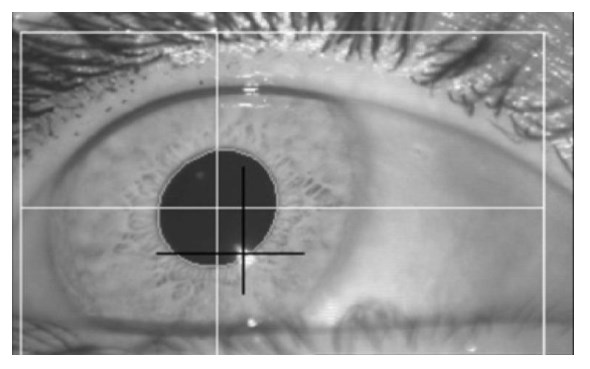
Smart Eye, "Meet Smart Eye Aurora" (YouTube)
Say what screen based eye tracking measures and what it cannot, why attention to commercials is worth measuring, and which equipment, software, and files this workshop uses.From idea to research question
A client rarely arrives with a research question. A client arrives with a business question, a statement of what the business wants to know or to happen. Picture a brand manager with two finished commercials for the same television set and money to air one: "Which of our two commercials does more for the product?" The sentence names a wish and a comparison, but not who will watch, what "does more" means, how it will be measured, or what difference would count. A research question names the problem the study will answer and signals the type of study needed. A hypothesis is a testable answer to that question, written with the specific variables that will be measured. The iMotions design guide asks for both before any data are collected, because writing the expected answer first forces you to say what you would accept as evidence and guards against confirmation bias, the habit of seeing what you expected to see.
The independent variable is what the researcher changes; the dependent variable is what is measured in response. Here the independent variable is the commercial, with two levels, Balls and Paint. The lab asks every study to pass through one sentence with four slots: who, sees what, measured how, compared against what. For the ad test it reads: adult television viewers (who) watch both commercials on the lab monitor, in an order balanced across viewers (sees what), while the Aurora records where they look and a rating slide after each commercial asks how much they liked it (measured how), and each viewer's response to Paint is compared with the same viewer's response to Balls (against what). If you cannot fill all four slots, you do not yet have a study.
Weak questions fail in three ways, and each can be repaired. "Which commercial is better?" is an opinion and too general: better at what, and for whom? "Does Paint work?" is missing its what and its how: work at what, shown by which metric, against what? "What do people look at in commercials?" has everything as its answer, so nothing can be tested. The repair names an observable, a measure, and a comparison: "Among the same viewers, is the share of the product shots spent fixating the television set higher in Paint than in Balls?" The iMotions table below makes the same contrast.

Before choosing measures, separate the three outcomes an ad test can measure, because they are different things and they can disagree. Attention is where and when the eyes go: whether the viewer fixated the product, how soon the logo was found. Affect is how the viewer feels about the commercial, here how much it is liked. Memory is what the viewer can retrieve afterward, such as the brand name in an unaided recall question (asked without showing the brand) at the end of the session. A commercial can hold the eyes and be disliked, or be enjoyed and leave the brand forgotten. The eye tracker measures only attention: liking needs the rating slide, and memory needs a question after the commercials. A large comparison of traditional, eye tracking, physiological, and brain measures as predictors of how ads performed in the market found that the newer measures did not all add the same thing (Venkatraman et al., 2015), so name the single outcome each measure stands for.
Attention metrics answer where, when, how long, how often, and in what order. They do not answer why. A long look at the television set can mean interest, confusion, or admiration for the picture, and the recording looks the same in each case. Reading a mental state straight off a physiological signal is called reverse inference, and reviews of consumer neuroscience warn against it (Plassmann, Venkatraman, Huettel, & Yoon, 2015).
Now the hypotheses, written before any data exist. They need three more terms. An area of interest (AOI) is a named region of the stimulus where iMotions computes metrics; on a video it is a dynamic AOI, which follows its element as it moves and counts only while the element is on screen. A fixation is a period, typically 100 to 300 milliseconds, in which the eyes rest on one spot.
- H1. Dwell time (%) on the Product_TV AOI (the television set in the product shots) is higher in Paint than in Balls. Dwell time (%) is the share of the time the AOI was on screen that the viewer spent fixating inside it.
- H2. The time to first fixation (TTFF) on the Brand_Logo AOI, the logo on the end card (the closing frame that shows the brand), is shorter in Paint than in Balls. TTFF is a family of metrics that differ in when the clock starts: TTFF AOI counts from the moment the AOI becomes active, TTFF parent from the start of the commercial, and TTFF max. gives a viewer who never fixated the AOI the parent's full duration. H2 uses TTFF AOI, so its clock starts when the logo appears and stops at the first fixation on it.
- H3. Liking, rated from 1 to 7 after each commercial, differs between the two commercials.
All three tests in this study are two tailed. A two tailed test asks whether two means differ in either direction. A one tailed test looks only in the predicted direction, so it is blind to a difference the other way, and it is defensible only when a difference the other way would be meaningless. Here it would not be: if Balls held more attention on the product than Paint, or if viewers found the logo sooner in Balls, the client would want to know. So H1 and H2 each state the direction that the reasoning predicts, and their tests are still two tailed. H3 states no direction at all, because nothing in the attention argument says which commercial will be liked more (a spectacle can be enjoyed for itself), and its test is two tailed as well. The directions of H1 and H2 come from reasons. Pictures capture attention whatever their size, while the brand passes attention on to the other elements (Pieters & Wedel, 2004), and visual complexity changes an ad's stopping power, its ability to catch and hold the eye (Pieters, Wedel, & Batra, 2010). In this workshop's simulated plan (a plan, not a measurement of the real commercials), the hero element, the balls or the paint, is on screen for 40 seconds in Balls and 32 in Paint, and the product shots for 14 and 20 seconds. Paint leaves the spectacle less time to compete with the product (H1), and eyes already on the product may find the logo sooner (H2). Viewers also differ in how far into an ad they go (Rosbergen, Pieters, & Wedel, 1997), so averages hide differences between people; a review of eye movements on advertisements summarizes this research (Higgins, Leinenger, & Rayner, 2014). A hypothesis grounded in a reason is one you can learn from when it fails.
The iMotions design guide puts it plainly: "Biometric measures are granular enough that you can almost always find some result." The AOI Metrics article lists 48 metrics for every AOI, so four AOIs in two commercials give 384 numbers for every viewer. Test the 48 metrics on each of the four AOIs for a difference between the commercials and you have run 192 tests; if no real difference existed anywhere, about one test in twenty, roughly ten in all, would still come out significant at the .05 level.
The remedy is to choose one primary metric for each hypothesis before the data exist and to label everything else secondary or exploratory. Here the primary metrics are Dwell time (%) on Product_TV for H1, TTFF AOI on Brand_Logo for H2, and the 1 to 7 liking rating for H3. Write them into a dated plan with the hypotheses, the sample size, and the exclusion rule. Filing that plan before collection is called preregistration, and it lets a reader tell a prediction from a story told afterward. Section 02 adds the design, section 03 writes the whole plan, and section 08 holds you to it.
Help center articles for this section: Designing Your Research Study
Turn a client's business question into a research question and a one sentence comparison, tell attention from affect and memory, write three hypotheses with one primary metric each, and explain why fishing through 48 metrics finds chance.Designing a within subjects test
A design is the set of decisions that make a comparison fair, and the first is how to assign viewers to conditions. In a between subjects design each participant experiences one condition; in a within subjects design every participant experiences all conditions. The iMotions design guide states the trade: between subjects designs need larger samples, while within subjects designs need fewer participants but risk fatigue. Within subjects also makes each viewer his or her own control, so stable differences between people (some viewers look at products in any commercial) drop out of the comparison.
If you did Workshop 1, you met the other choice: a real shelf could not be reset in front of a shopper, because the first visit taught her where the brand sat, so the shelf study was between subjects. A screen can show two different commercials in one session. Within subjects is still wrong when the first condition spoils the second, as with two cuts of one commercial that differ only in the end card: by the second viewing the story is known and the change may be spotted, so that comparison goes back to between subjects.

The price of within subjects is that the first commercial can change how the second is watched. Carryover is what the first condition leaves behind: knowledge of the brand, the expectation of a product shot, or tiredness. An order effect is a difference caused by position alone, such as more looking at the product in whichever commercial comes second. Neither can be removed, but both can be balanced. Counterbalancing presents each order to equal numbers of viewers so that, in the design guide's words, order effects cancel each other out. Order A shows Balls first; Order B shows Paint first.
In iMotions each order is a flow, an ordered list of the stimuli a respondent sees. A study can hold one flow or several, and the study settings assign respondents to flows manually or at random (section 04 builds them). Manual allocation from a prepared list (A, B, A, B) guarantees equal groups; random allocation keeps the operator's choices out. The alternative to flows is a test plan, a file listing each respondent and the stimuli he or she will see. Either way, record the order as a variable, because section 08 checks whether it mattered.

Paired data are powerful. A viewer who looks at products a lot in one commercial tends to do so in the other; in the simulated data of section 08 a viewer's two product dwell shares correlate at r = .48 (simulated). The paired t test works on each viewer's difference, Paint minus Balls, so the stable part of each viewer cancels. The effect size states how large a difference is in standard units; for paired data it is dz, the mean of the differences divided by their standard deviation. The more a viewer's two measures move together, the smaller that standard deviation and the larger dz (Lakens, 2013). Power is the probability of detecting an effect of a given size if it is real; the usual target is 80 percent.
For a large effect, dz = 0.8, a paired test at two tailed alpha .05 and 80 percent power needs 15 usable viewers; a medium effect, dz = 0.5, needs 34, and a small one, dz = 0.3, needs 90. If you did Workshop 1, compare: the same large effect between subjects needed 26 shoppers per group, and a medium effect between subjects needs 64 per group.
G*Power is the program most researchers cite for this (Faul, Erdfelder, Lang, & Buchner, 2007). The conventions 0.2 small, 0.5 medium, and 0.8 large were written for differences between groups (Cohen, 1992), so they are only a rough guide for dz.
Three practical rules follow. The iMotions design guide recommends 20 to 60 people per study condition, and its Static Image Testing template plans 25 per cell. The lab's convention for a screen study is 25 to 30 usable viewers. Recruit 20 to 25 percent more than the usable target, because calibration fails for some viewers and some recordings fall below the exclusion rule: 30 usable viewers means scheduling about 36 to 38.
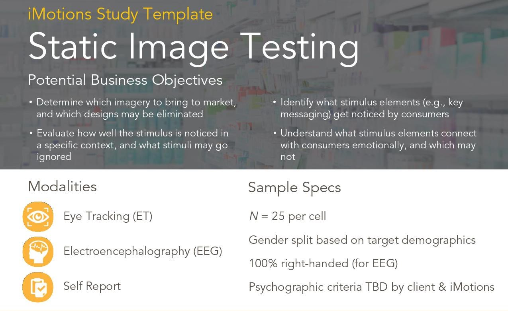
Two commercials are two stimuli, two specific things shown to viewers, not a sample of commercials in general, and a difference between them belongs to everything that differs at once: story, music, product shots, end card. The result can say that Paint, as made, held more of these viewers' attention on the product than Balls, as made. It cannot say that spectacle hurts product attention; that needs many commercials analyzed as a sample, called stimulus sampling (Judd, Westfall, & Kenny, 2012), with power that depends on the number of stimuli as well as viewers (Brysbaert & Stevens, 2018).
Each slide in the session has a job. Calibration, in which the viewer follows dots so that the tracker learns his or her eyes, is part of every session (section 05). A Welcome slide greets the viewer. An Instructions slide gives the task in the same words to everyone: "Watch the screen as you would watch television at home." It must not name the brand or the comparison, because a viewer who guesses what the researcher hopes to see tends to supply it, a demand effect. Before each commercial comes a baseline, a neutral rest screen that lets each commercial start from the same calm state and, in Workshops 3 and 4, gives other sensors a resting level. After each commercial comes a rating slide, a survey slide (a screen that asks a question) where the viewer rates liking from 1 to 7.
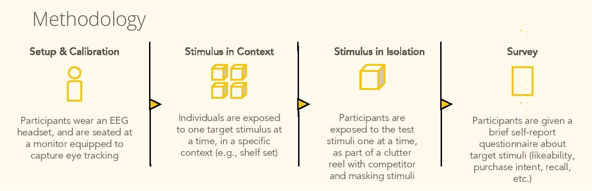
Two more decisions are written now. The exclusion rule: a viewer whose Valid data (the percentage of expected gaze samples the tracker delivered) is below 70 percent is excluded, and every viewer's calibration result (Excellent, Good, or Poor) and recalibrations go into the session log. Calibration and the viewer's eyes both affect data quality (Nyström, Andersson, Holmqvist, & van de Weijer, 2013), and a rule chosen after seeing who looks bad is chosen to get a result. Then the AOI master list: dynamic AOIs are drawn after collection but planned now from the storyboard, the shot by shot plan of the commercial. The times below belong to the simulated plan, not to the real commercials.
| AOI | What it covers | On screen in Balls | On screen in Paint |
|---|---|---|---|
| Product_TV | The television set in the product shots | 14 s | 20 s |
| Brand_Logo | The logo on the end card | Last 5 s | Last 5 s |
| Tagline_Text | The tagline text at the end | Last 4 s | Last 4 s |
| Hero_Element | The balls or the paint | 40 s | 32 s |
Last, consent. Informed consent is a documented explanation, given before participation, of the five items the iMotions consent FAQ lists: the purpose, that taking part is voluntary and can be withdrawn, the participant's rights, how the data will be handled, and the risks. What a person looks at can reveal interests, health, and identity (Kröger, Lutz, & Müller, 2020), and the face video of Workshop 3 identifies the viewer outright. The NMSBA code of ethics sets out the participant rights that commercial studies should respect (Neuromarketing Science & Business Association, n.d.). At Jacksonville State a study that will be published or presented first goes to the Institutional Review Board (IRB), the committee that reviews research with human participants.
Help center articles for this section: Designing Your Research Study · Using a Test Plan for Study Design · Standard Methodologies: Static Image Testing
Defend a counterbalanced within subjects design, explain dz and plan the sample, say what two stimuli can show, and fix the session, exclusion rule, AOI list, and consent in advance.The worked example in full
Everything in sections 01 and 02 fits on one page, and writing that page is the first deliverable of any study in this lab. Below is the commercial test as a student study plan, following the design of the simulated data set. Read it as a template: change the commercials, the AOIs, and the numbers, and you have the plan for your own test.
- Question
- Among adult viewers, which of two commercials for the same television brand, Balls or Paint, holds more attention on the product and on the brand at the end, and which is liked more?
- Hypotheses
- H1: Dwell time (%) on Product_TV is higher in Paint than in Balls. H2: TTFF AOI (ms) on Brand_Logo is shorter in Paint. H3: liking (1 to 7) differs between the commercials, two tailed.
- Design
- Within subjects, one factor (commercial) with two levels. Two flows for counterbalancing, Order A (Balls first) and Order B (Paint first), allocated alternately from a list prepared before collection; the order is stored as Group (A or B).
- Stimuli and flow
- Commercial_1_Balls and Commercial_2_Paint, 60 s each in the simulation. Welcome, Instructions, then for each commercial a Baseline slide, the commercial, and a rating slide.
- AOIs
- Four dynamic AOIs with the active intervals planned in section 02: Product_TV (14 s in Balls, 20 s in Paint), Brand_Logo (last 5 s), Tagline_Text (last 4 s), and Hero_Element (40 s in Balls, 32 s in Paint). The list is final before collection.
- Sample
- 30 viewers scheduled (R01 to R30), 15 per order, for a target of at least 25 usable; 15 usable viewers give 80 percent power for dz = 0.8.
- Task
- "Watch the screen as you would watch television at home," read in the same words to every viewer.
- Measures
- Eye tracking, per viewer, commercial, and AOI: Dwell time (%), TTFF AOI (ms), respondent ratio, fixation count, and revisit count. Survey: liking of each commercial (1 to 7) on its rating slide; at the end, unaided brand recall (Yes or No) and the preferred commercial.
- Exclusion rule
- Exclude a viewer whose Valid data is below 70 percent. Log every viewer's calibration result and recalibrations.
- Analysis plan
- For each hypothesis, a two tailed paired t test on the Paint minus Balls differences, with dz and its 95 percent confidence interval, checked by a Wilcoxon signed rank test. H2 on the viewers with a TTFF AOI value in both commercials, plus a sensitivity analysis for viewers who never fixated the logo. A mixed model of Product_TV dwell share with commercial, order position, their interaction, and a random intercept per viewer, to check the order effect. Brand recall against logo dwell time with a point biserial correlation. Alpha .05.
- Deliverables
- An AOI table by commercial, heatmaps for named moments, three figures, a results section and a discussion in journal form, and a three sentence client summary.
Three names in the analysis plan return in section 08: the Wilcoxon signed rank test checks the paired t test using the ranks of the differences instead of their values; the mixed model is a regression that knows which rows come from the same viewer; the point biserial correlation relates a measurement to a yes or no answer.
Each hypothesis has one primary measure, and the pairing is the heart of the plan. H1 uses Dwell time (%) on Product_TV, a share rather than milliseconds, because the television set is on screen for 14 seconds in Balls and 20 in Paint; a share of the active time puts both on one scale. H2 uses TTFF AOI (ms) on Brand_Logo, timed from the moment the logo appears, with the respondent ratio (the percentage of viewers who fixated the AOI at all) as a check that a faster time does not come from fewer viewers looking. H3 uses the liking ratings, which no gaze metric can supply. Brand recall and the preferred commercial are secondary measures of memory and affect, and Tagline_Text and Hero_Element are described, not tested.
The real material sits in the lab's Library. "DEMO - SonyBravia" is a demonstration study from iMotions built around two Sony BRAVIA commercials from the "Colour like no other" campaign by the agency Fallon: "Balls" (2005), in which 250,000 rubber balls bounce down a San Francisco street, and "Paint" (2006), directed by Jonathan Glazer, filmed in Glasgow, and first aired in the United Kingdom on October 17, 2006. Its stimuli are named Welcome, Instructions, Baseline1, Baseline1_Loading, Commercial1A_Balls, Commercial1A_Balls_Loading, Commercial1A_Balls_Rating, Commercial1B_Balls, Commercial1B_Balls_Loading, Commercial1B_Balls_Rating, Commercial2_Paint, Commercial2_Paint_Loading, Commercial2_Paint_Rating, Baseline2, Baseline2_Loading, ThankYou, and Commercial1A_Balls_Frog, and its RECORDED DATA tab lists four respondents (iMotions' word for participants), R1 to R4. The names echo the parts of the flow that section 04 builds: Welcome, Instructions, a Baseline, a commercial with its rating slide, a second Baseline, a second commercial with its rating slide, and a ThankYou. What the names do not tell you (the order in which the demo study plays them, how long each stimulus runs, which sensors recorded the respondents, why there are two Balls stimuli, what the Loading and Frog stimuli are) you find by opening the study on the lab laptop, not by guessing.
Four respondents are too few for any test, and this workshop reports no results from the demo study. Every other number about viewers, in any section, comes from a SIMULATED data set built to mirror a two commercial test of this kind. No viewer was recorded for it, and none of its numbers may be quoted as a finding about the real commercials or real viewers.
The three simulated data files sit in the site's data folder. One script, make_simulated_data.py (seed 20268242), generated all three, and each opens with a line that says SIMULATED. SIMULATED_ad_test_AOI_metrics.csv is the file the statistics use: one row per respondent, commercial, and AOI, so 30 viewers, 2 commercials, and 4 AOIs give 240 rows. The identifier columns say whose row it is: Study Name, Respondent Name (R01 to R30), Gender, Age, Group (the order, A or B, not a treatment), Session Date, Stimulus (Commercial_1_Balls or Commercial_2_Paint), and AOI Name. The metric columns copy the names in the iMotions AOI Metrics article: Stimulus duration, AOI duration (ms) and (%), Valid data, Gaze Hit time AOI (ms), Gaze Dwell count, Gaze Dwell time (ms), Dwells with fixations, Revisit count, Fixation count, TTFF AOI (ms), TTFF parent (ms), TTFF max. (ms), Dwell time (ms), Dwell time (%), Fixation duration (ms), and First fixation duration (ms); section 06 defines each. The manuals name these metrics but do not print the header row of a real export, so the header layout of a real Individual AOI metrics export has to be verified on the lab machine; the simulated file uses the manual's metric names without claiming to reproduce a real header row. Where a viewer never fixated an AOI, the fixation based metrics read NA, which means not observed, not zero.
SIMULATED_ad_test_survey.csv has one row per respondent: Liking_Balls_1to7, Liking_Paint_1to7, Brand_recall (Yes or No), and Ad_preferred. SIMULATED_ad_test_session_log.csv is the operator's log: Respondent Name, Session Date, Operator, Group, Calibration result, Recalibrations, Distance to screen (cm), Glasses worn, Valid data (%), Data complete, and Decision note. All three files share Respondent Name, which joins them. One log row, R23 in Group A, records Valid data of 58 percent and a calibration that stayed Poor after two recalibrations, with the decision EXCLUDE, which leaves 29 viewers, 14 in Group A and 15 in Group B (all simulated). The folder also holds analysis.R with its output (analysis_output.txt) and the result tables it writes, the Excel workbook SIMULATED_ad_test_analysis.xlsx with its guide, and results_text.md, the model paragraphs that sections 06, 09, and 10 adapt.
One deliverable is a picture rather than a number. A heatmap lays color over the stimulus where viewers looked, transparent where nobody looked and red where attention gathered most. The help center calls heatmaps purely qualitative visualizations: they show, and the AOIs supply the numbers. On a commercial a heatmap belongs to a moment or an interval, never to the whole video at once; section 07 explains why.
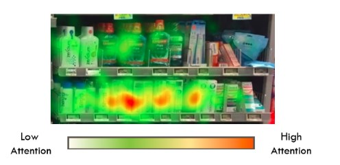
Building the study in iMotions Lab 11.1
The Study Builder turns the design from section 02 into the session a viewer will sit through; each screen asks a question the design has already answered. If you did Workshop 1, notice the difference: a glasses study holds one stimulus, the recording, while a screen based study holds a flow, an ordered list of stimuli (the videos and slides shown on the screen). Because every viewer sees both commercials (a within subjects design), the order is part of the design and is built into the study. Either lab computer works, since both license keys include Eye Tracking Screen based.
4.1 Create the study
- Open the wizard. Press Ctrl+N or click the "+" next to LIBRARY. You should see "Create a new study" with seven tiles: Screen-based, Remote Data Collection, Glasses, Screen-free recording, Mobile device, Smart Eye Pro, and Test Plan (confirmed on the lab laptop on October 7, 2026). Common mistake. Choosing Remote Data Collection, which sends a study to respondents online rather than to the lab monitor.
- Choose Screen-based and click Next. On the sensor page select Eye tracking and uncheck everything else; the Aurora itself is connected in Global Settings (section 05). You should see Eye tracking as the only sensor; how the tile names the Aurora should be verified on the lab machine. Common mistake. Leaving an unused sensor checked.
- Describe the respondent screen. Pick the lab monitor from the presets, or enter its width and height in centimeters and its resolution, and save it. Why: iMotions needs the physical size to calculate gaze angles. The visual angle is the size of something as seen from the eye, in degrees, and depends on size and distance; the fixation filter and AOI padding in section 06 are stated in degrees. Windows scaling distorts auto detection (a 1920 x 1080 monitor at 125 percent reads as 1536 x 864), and survey slides need Display Scaling at 100 percent, so set 100 percent first. You should see the monitor's real size and native resolution. Common mistake. Accepting the laptop's own screen.
- Name the study on the "Name your study" page by the lab convention YYYY_Client_Topic (for example 2026_ClassPractice_TwoCommercials) and finish the wizard. You should see the study in the Library. Common mistake. Keeping the default timestamp name.

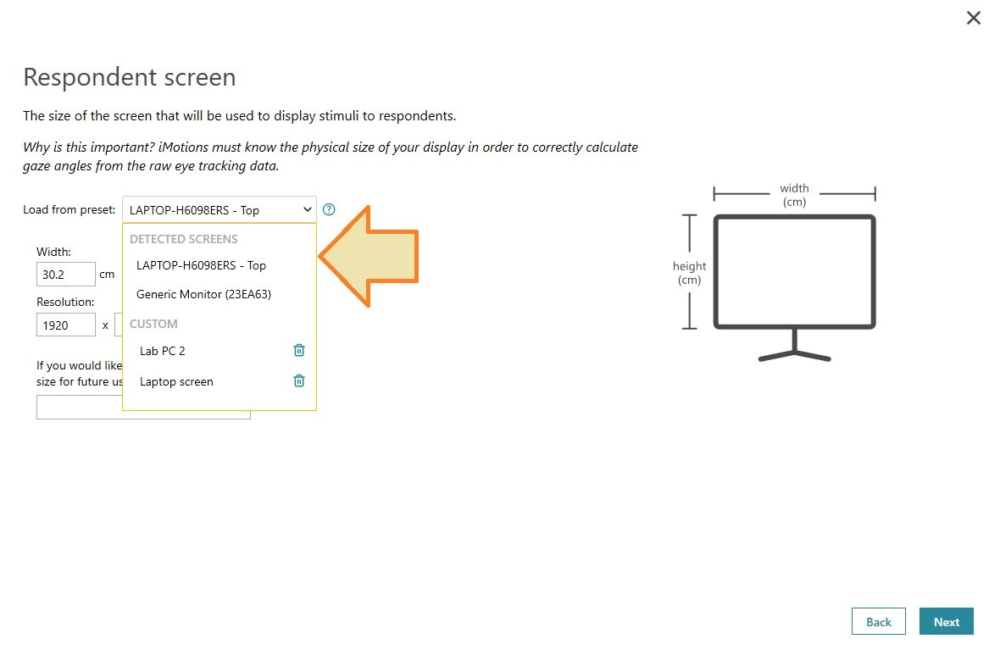
4.2 Build the flow for Order A
The flow is the session in order: Welcome, Instructions, a Baseline (a neutral rest screen before each commercial), the first commercial and its rating slide, a second Baseline, the second commercial and its rating slide, and a thank you. The DEMO - SonyBravia study uses names such as Baseline1, Commercial1A_Balls, and Commercial1A_Balls_Rating, which suggest the same pattern; open the study on the lab laptop to see its flow.
- Open the builder. Select your study and click Edit stimuli. You should see the Flow designer tab (Study flows, Repository, and Properties panels; tiles for Block, Media, Survey, Screen recording, Website, and Qualtrics) and the Stimuli overview tab. Common mistake. Editing the demo study instead of your own.
- Add the media. Click Media and add the two commercials. The manual prints the video formats as "MP4 or WAV", probably a misprint, so play every video in the study preview. If one lags, flickers, or has poor sound, right-click the study in the Library, choose "Convert videos for compatibility", and preview again. You should see smooth playback. Common mistake. Expecting a new file type: the command replaces the original and does not change the format.
- Add the rating slides. Click Survey, add a Scale element for liking from 1 to 7, give it a Question ID that names the commercial (Liking_Balls, Liking_Paint), and click Save to Study. A survey slide asks a question on screen; the Question ID labels the answer in the survey results. Do not randomize questions or labels, which ties all video replays to one image. You should see the slide in the flow. Common mistake. Two slides with the same Question ID.
- Group and fix the order. Select a commercial and its rating slide and press Ctrl+G to make a block, a group of stimuli that moves as a unit: Block_Balls and Block_Paint. The pin icon fixes a stimulus in place and the arrow icon randomizes it, so pin both. Baseline1 and Baseline2 are separate stimuli because a stimulus cannot appear twice in one flow. You should see Welcome, Instructions, Baseline1, Block_Balls, Baseline2, Block_Paint, ThankYou. Common mistake. An arrow left on a rating slide, which can show the rating first.
- Set the properties. Select several stimuli to edit them together, then check the Stimuli overview tab: presentation duration and display order for each, the same duration for both Baselines, and manual advance for the rating slides. Common mistake. A rating slide that advances before the viewer answers.
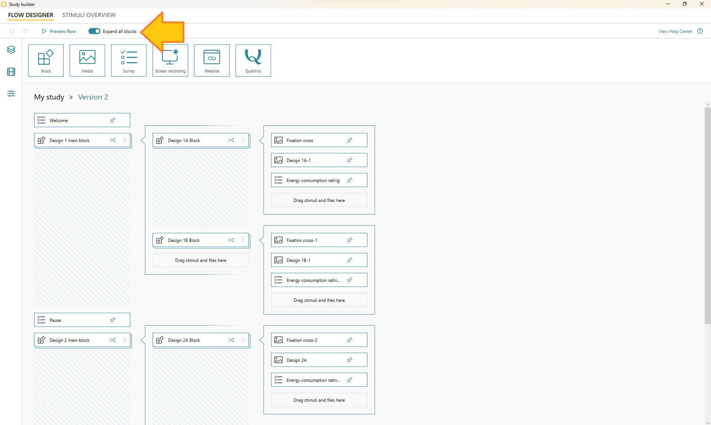
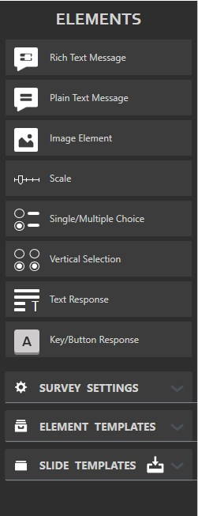
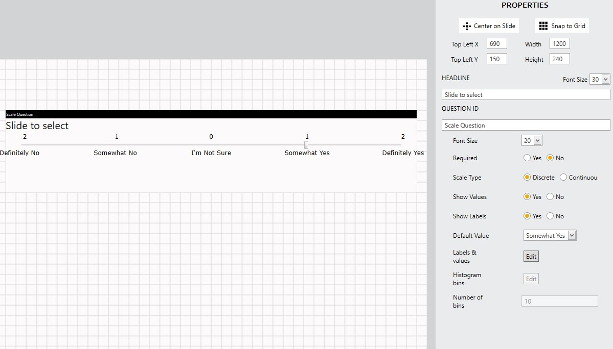
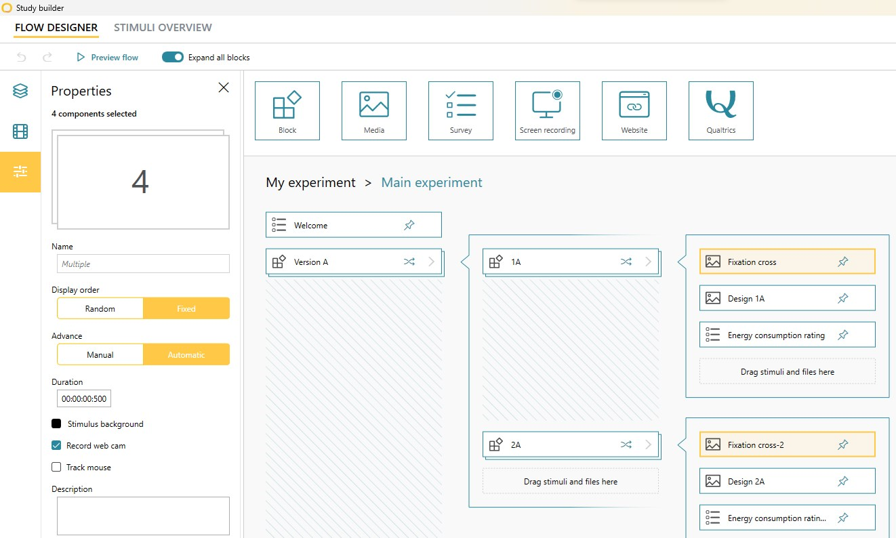
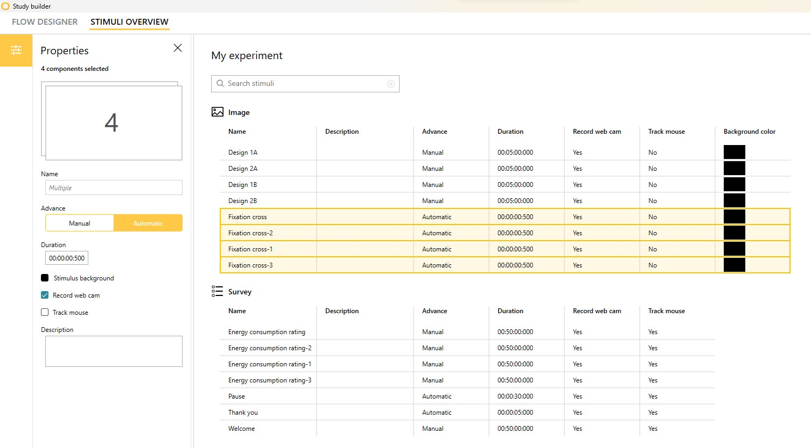
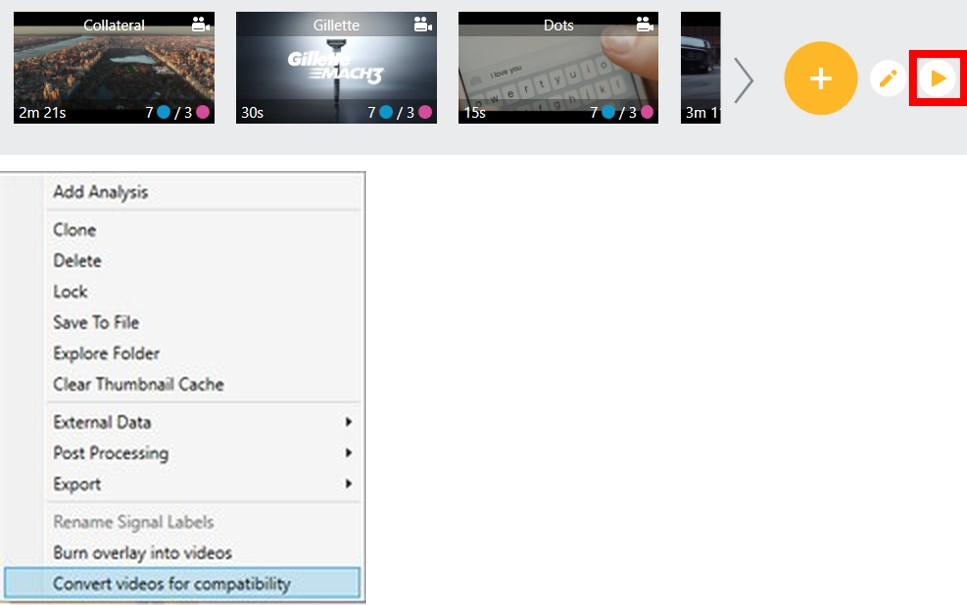
4.3 Counterbalance with a second flow
Why: the second commercial carries practice, fatigue, and comparison with the first. Counterbalancing shows half the viewers each order, so these order effects cancel out of the comparison.
- Duplicate the flow. In the Study flows panel click Duplicate flow (Add flow starts an empty one) and, in the copy, swap Block_Balls and Block_Paint: Order A shows Balls first, Order B Paint first. You should see two flows with the same stimuli in different orders. Flows share stimulus properties (a duration changed in one changes in both), but each keeps its own order. Common mistake. Moving a commercial without its rating slide; move whole blocks.
- Choose the allocation. On STUDY SETTINGS choose manual selection or randomization by iMotions. This workshop selects manually from a list written in advance (A, B, A, B), which keeps the groups equal. Common mistake. Not logging each viewer's order, which makes the order effect untestable in section 08.
A test plan, created through the Test Plan tile from a CSV of respondents (NAME, GENDER, AGE, CITY) and a Stimuli folder, is the alternative for many versions; for two orders, two flows are simpler.
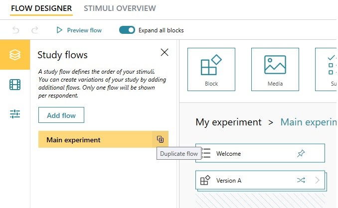
4.4 The study tabs
Click the study name to see its tabs: STUDY SETTINGS, SENSORS, GAZE ANALYSIS, LIVE MARKERS, EXPORT, RECORDED DATA, and LATENCY SETTINGS. STUDY SETTINGS holds the name, screen parameters, flow allocation, and calibration mode. The manuals name the calibration modes differently from one version to another: the Study Builder article calls the recommended mode experimenter guided calibration, the One-Screen Calibration article names Regular (the default) and Compact, and the Participant-guided article names Respondent guided. This workshop uses the mode that the Study Builder article recommends; verify the mode names in 11.1 on STUDY SETTINGS on the lab machine. GAZE ANALYSIS is the fixation filter page, not an analysis launcher: it sets the I-VT filter, which sorts the raw gaze points into fixations (moments when the eye rests on one spot) and saccades (the quick jumps between them) by eye speed (section 06). LIVE MARKERS defines the keys for a live marker, a time stamp the operator adds during recording (section 05). EXPORT and RECORDED DATA return in sections 05 and 07. Leave LATENCY SETTINGS unchanged.
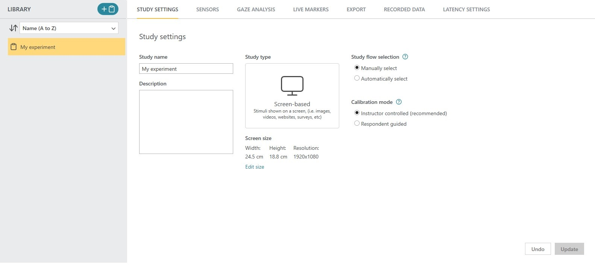
Scaling at 125 percent; an unpreviewed video; two rating slides with one Question ID; one flow; an unrecorded allocation; a single copy of the study. Back up the empty study before the first session and the full study after each day with Save To File (in the right-click menu shown in the re-encoding figure).
Help center articles for this section: Using the iMotions Study Builder, Re-Encoding of Incompatible Video Stimuli, Using a Test Plan for Study Design, and the manual iMotions Survey Stimuli and Elements (PDF).
The Aurora and the session
The Aurora is a bar under the monitor that lights the eyes with infrared light and films them. Its software finds the pupil center and the reflection of the light on the cornea (the clear front of the eye) and computes where the eye points, a method called pupil center corneal reflection (PCCR). The lab's unit records 60 gaze samples (estimated gaze points) per second, one every 16.67 ms; that is its sampling rate (Smart Eye, n.d.). Unlike the Neon in Workshop 1, it must be told where the screen is and must learn each viewer's eyes.
5.1 The Aurora: one setup per computer and monitor
Why: the tracker measures the eyes relative to itself, and a setup tells it where it sits on the screen. A new setup is required "if Windows Display Settings are changed or a different eye tracker model is used", so a new monitor or scaling value means a new setup.
- Install. The box holds the tracker, a mount with adhesive strips, and a USB cable. Install the Smart Eye Tracker software (the article names version 13.0.1 and Windows 10 or newer) and note the version on each lab computer.
- Start a setup. Open the Smart Eye Setup Tool, select Aurora, and click "+New setup". Select the stimulus monitor and click "Show center marker" (the manual's text spells it "Show center maker"; use the wording on the screen). You should see a "Center of display" mark at the bottom of that screen.
- Mount. Attach the mount flat and stable at the bottom center of the bezel (the bezel must be at least 14 mm), just below the display without covering it, and seat the Aurora so the square pegs fit the square slots, glass toward the viewer. Common mistake. A mount that is off center or tilted.
- Align and save. Press any key, click Next, drag the two guidelines to the ends of the tracker, and press Enter. Name the setup after the monitor and click Finish. You should see the setup in the tool's list.
- Connect. Plug in the USB cable, close the Setup Tool, and open Preferences > Global Settings (Alt+G) > Eye tracking tab. Check Eye Tracking Server and choose the Smart Eye entry in Model (the manuals spell it "Smart Eye AI-X/Aurora" and "Smart Eye Aurora or Smart Eye AI-X"; verify on the lab machine). Host Address 127.0.0.1 is the USB default; 10.0.0.1 is for an EPU, an external processing unit supplied only with the 120 Hz and 250 Hz models. Click Test Connection, then OK. You should see the eye tracker widget, a small window showing the connection and whether the eyes are detected. Common mistake. Eye Tracking Server left unchecked.
Three signs need a fix. A "!" in the widget means that no setup exists for this display: run the Setup Tool and create one. "Re-Profile" helps when the tracker does not track a viewer. "Tracker not connected" usually means too little USB power or a security restriction; try a higher power USB port.
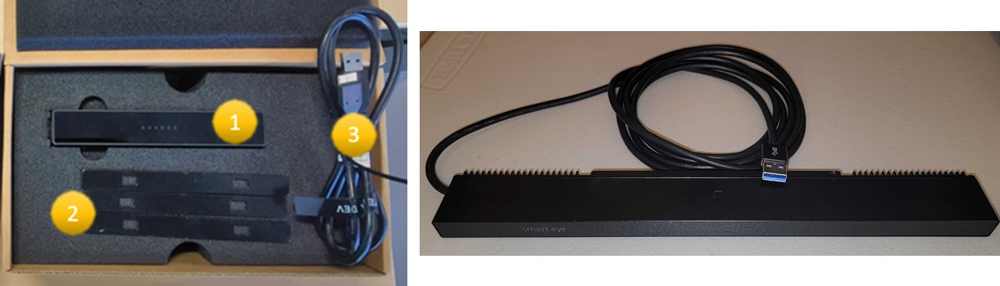
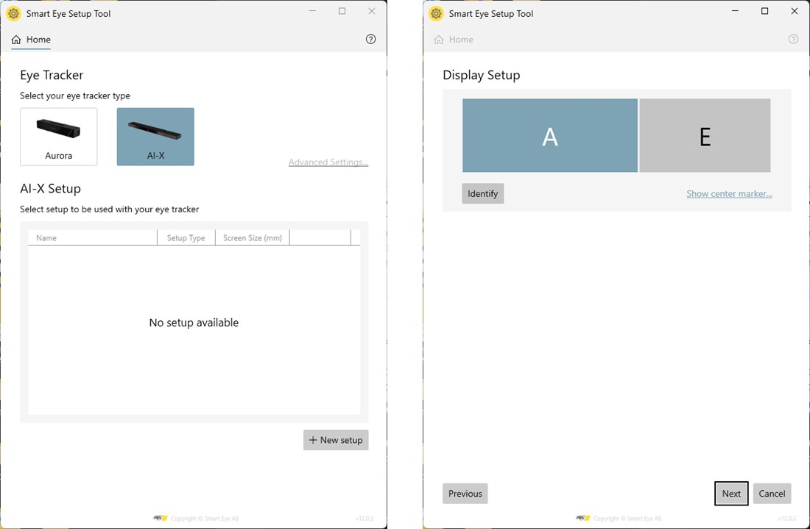
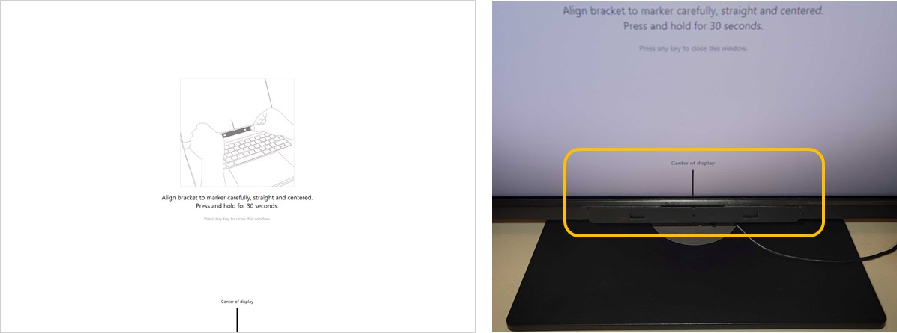
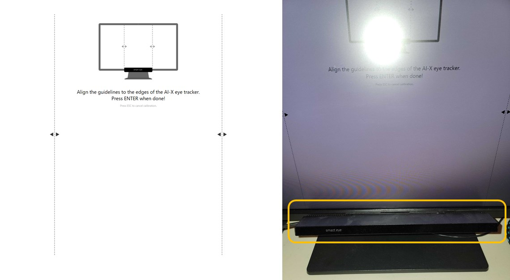
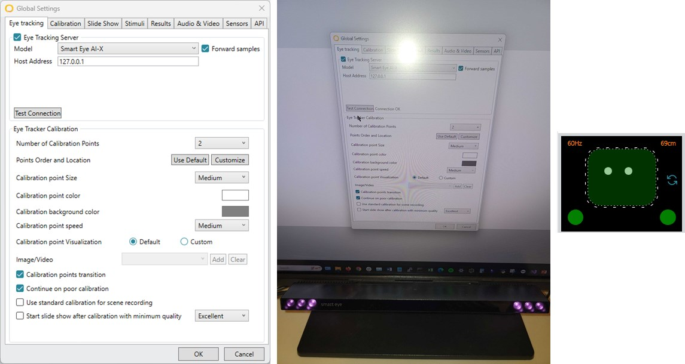
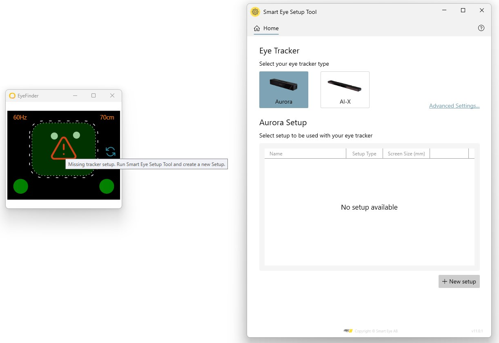
5.2 The viewer
The planning article's rules are short. No sunlight, and no fluorescent office lights. A chair without moving parts, the head about 60 cm from the screen, the eyes near the middle of the screen. The widget, which the planning article calls the Eye Finder (double-click detaches it), shows the sample rate and the distance, and the position is right when the two dotted squares merge. Glasses and contact lenses can be tracked but take longer to calibrate; thick rims, strong prescriptions, astigmatism, and laser surgery make tracking hard. Head movement and changes in distance lower data quality even for trackers built to tolerate them (Niehorster, Cornelissen, Holmqvist, Hooge, & Hessels, 2018), hence the fixed chair.
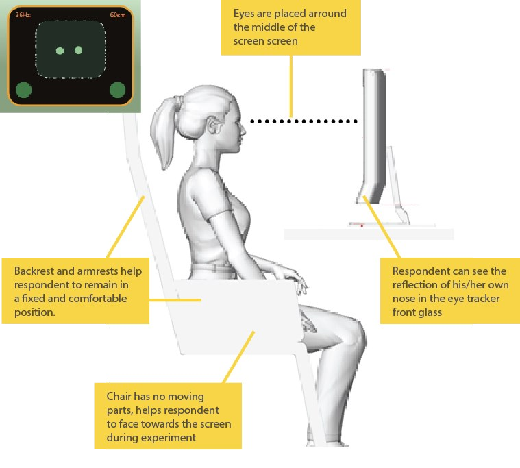
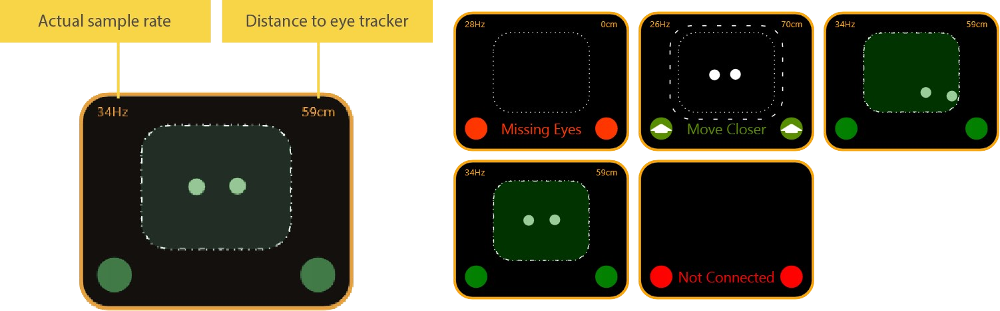
5.3 Calibration
Why: eyes differ, so before recording the viewer looks at known points and the tracker learns how that viewer's eye images map onto the screen. That is calibration, and both the method and the viewer's eyes shape the quality of the data (Nyström, Andersson, Holmqvist, & van de Weijer, 2013), above all the accuracy, how close the measured gaze lands to where the eye really looks (section 06).
- Set the points. Open Preferences > Global Settings and find the Eye Tracker Calibration settings (number, size, color, and speed of the points). The planning article places them on the Calibration tab and the Global Settings article on the Eye tracking tab; verify on the lab machine. Use at least 9 points. You should see the number of points set to 9 or more.
- Instruct. Tell the viewer to follow the red circle and focus on the black dot inside it.
- Read the result. After a spinning wheel the result appears as Excellent, Good, or Poor. Excellent: continue. Good: recalibrate once or twice, or continue. Poor: work through the four checks on the screen (lighting, positioning, screen angle, eyesight) and recalibrate. If it never improves, the manual says to skip the respondent; this workshop either records and flags the session in the log, so the exclusion rule decides later, or stops. Common mistake. Recalibrating again and again; a tired viewer calibrates worse.
The calibration mode (section 04) changes what appears, so verify the mode names in 11.1 on STUDY SETTINGS on the lab machine. The One-Screen article describes a window after Record with a bar per sensor, green when optimal and red when not, and Continue, Back, or Override (not recommended); it is not for dual screen setups. The Participant-guided article describes preview widgets on the viewer's screen after Start Recording. The articles disagree on how Compact and Respondent guided relate, so verify that on the lab machine as well.
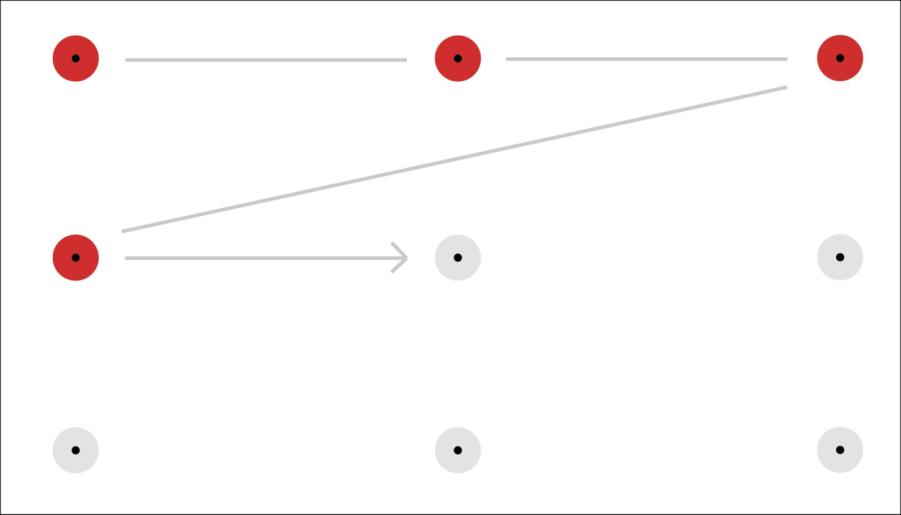
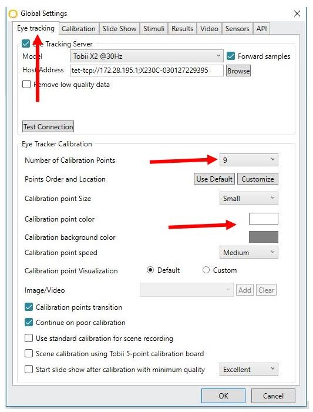
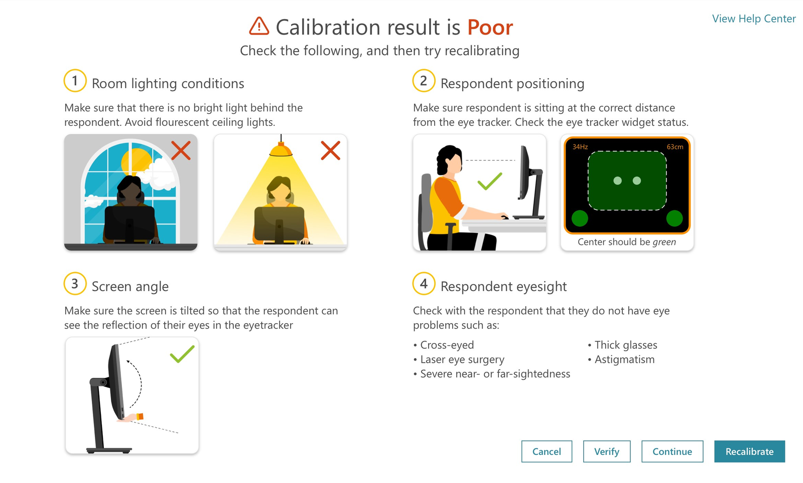
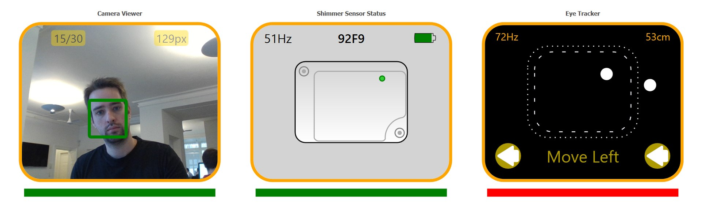
5.4 The session
- Before the viewer arrives: widget connected, study selected, allocation list and session log at hand, and live markers defined on the LIVE MARKERS tab (Name, Key, optional Shift or Control, Color, then "+").
- Consent. Gaze records reveal more about a person than they seem to (Kröger, Lutz, & Müller, 2020), so obtain informed consent: a signed agreement after the viewer has been told the purpose, the right to withdraw, and how the data are handled (the form from section 02).
- Seat and position the viewer as in 5.2 until the Eye Finder squares merge.
- Add the respondent. Select the study and click Add Respondent; enter the anonymous ID (R01) and the group (A or B) and choose the flow from the allocation list. You should see the respondent in the list; how the flow is chosen on screen should be verified on the lab machine.
- Record and calibrate. Click Start Recording, run the calibration, and act on the result as in 5.3. Calibration runs at the start of the recording, before the study flow (Welcome, Instructions, and so on) plays. The Planning article says Record starts calibration after an instruction slide in the Compact and One Screen Calibration setup, so verify on the lab machine whether an instruction slide appears before the calibration. Common mistake. Starting before the Eye Finder shows a good position.
- Instruct. The Instructions slide gives the task, "Watch the screen as you would watch television at home."
- Let it run. The commercials and rating slides run themselves; sit out of sight. If something happens (a cough, a look away), press a live marker key in the Sensor Data Preview, the operator's live view; the article gives F3 as the default key and says the preview needs a dual screen setup, so confirm both on the lab machine.
- Debrief the viewer and answer questions.
- Log. Write one row in the session log, the operator's record of each session. The simulated log shows the columns: Respondent Name, Session Date, Operator, Group, Calibration result, Recalibrations, Distance to screen (cm), Glasses worn, Valid data (%), Data complete, and Decision note. Common mistake. Filling in the log at the end of the day from memory.
5.5 After the session
Check the recording before the next viewer. Each recording appears as a card on the respondent's RECORDED DATA tab; what the card shows for the Aurora should be verified on the lab machine. For the numbers, click the study name, open the study's RECORDED DATA tab, and click the Export button at its top right, next to the grid and list view buttons (confirmed on the lab laptop on October 7, 2026). You should see a file ending in _DataQuality.txt that holds the effective sampling rate and the percentage of data obtained, the data quality statistics; the manual does not list the file's columns, so verify its layout on the lab machine. The AOI metrics export also carries a Valid data value per respondent, and the section 02 rule applies to it: keep a viewer only with Valid data of at least 70 percent. In the simulated log, R23 stayed Poor after two recalibrations, had Valid data of 58 percent, and is excluded; R09 and R17 went from Poor to Good after one recalibration and are kept. Write the decision in the log that day, before anyone sees results.
iMotions, "Advanced Eye Tracking with Smart Eye and iMotions" (YouTube)
iMotions, "iMotions Eye Tracking Solution" (YouTube)
Help center articles for this section: Setting up Aurora or AI-X in iMotions, Planning for Eye Tracker Calibration, Setting up Participant-guided Eye Tracker Calibration, One-Screen Calibration: Configurations and Settings, Data Collection Overview, Using Event Markers, Export: Data Quality Statistics.
From gaze samples to metrics: what a 60 Hz screen based tracker measures, and how to describe it
Every number in the results ends a chain: the Aurora records gaze samples, a filter sorts them into fixations and saccades, dynamic areas of interest mark where and when each element is on screen, and AOI metrics summarize what landed inside. The reporting standards ask for the apparatus, the processing, and the exclusion rules (Appelbaum et al., 2018), and the handbooks supply the vocabulary (Holmqvist et al., 2011) (Duchowski, 2017).
Gaze samples at 60 Hz
The Aurora lights the eyes with infrared light and locates the pupil and the corneal reflection, the pupil center corneal reflection principle. Each estimate of where the viewer looks is one gaze sample. At the lab unit's sampling rate of 60 Hz (Smart Eye, n.d.), a sample arrives every 16.67 ms, so a 60 s commercial yields about 3,600 samples per viewer and a 100 ms fixation, the short end of the typical 100 to 300 ms range, spans about six. If you did Workshop 1, note that a fixed screen needs no gaze mapping: every viewer sees the same frame at the same moment.
Accuracy and precision
Accuracy: does the tracker point to the right place? Gaze recorded a centimeter left of the dot a viewer stares at is inaccurate, even if every sample lands on one spot. Precision: does it point to the same place twice? Samples scattered around the dot are imprecise, even if their average is on target.
Accuracy is the average offset between measured and true gaze position, in degrees of visual angle. Precision is the spread of repeated samples while the eye is still, reported as the root mean square of sample to sample distances or as their standard deviation (Holmqvist et al., 2012).
The iMotions manuals define neither term. Both suffer with a poor calibration, glasses, contact lenses, and some eye physiology (Nyström et al., 2013), and with head movement and a poor seating distance (Niehorster et al., 2018). iMotions reports a calibration label (Excellent, Good, or Poor) and Valid data, the percentage of collected and interpolated samples, neither an accuracy in degrees; whether the Smart Eye software reports one must be verified on the lab machine.
Fixations, saccades, and the I-VT filter
A fixation is a period in which the eyes rest on one location long enough to take in detail; a saccade is the fast jump between fixations. Researchers disagree on the definitions (Hessels et al., 2018), so a methods section gives an operational one: whatever the named filter, with its listed parameters, classified as a fixation. Filters threshold velocity or dispersion (Salvucci & Goldberg, 2000).

The lab uses I-VT, velocity threshold identification: samples slower than the threshold form fixations, faster ones saccades. Velocity is measured in degrees of visual angle per second, an angle that depends on the distance to the screen, which is why the I-VT article calls the screen parameters "absolutely crucial."

The study's GAZE ANALYSIS tab holds Window Length, Velocity Threshold, Gap Fill-in with Max Gap Length, Noise Reduction (which can remove signal at low sampling rates), Discard Short Fixations with Minimum Fixation Duration, and Merge Adjacent Fixations. The article states no defaults and calls I-VT "typically used for higher-sampling eye tracking data (200 Hz or more)," with no rule for 60 Hz. So report the filter and every parameter exactly as the tab shows them, use the same settings for every respondent, and never interpret a single short fixation.

Gaze smoothing, a tick box in the Visualization menu (named Visualizations in the Gaze smoothing article; verify on the lab machine) that averages the drawn gaze over 160 ms (about 9 or 10 samples), is "exclusively for visualization purposes" and never changes fixations or exports.
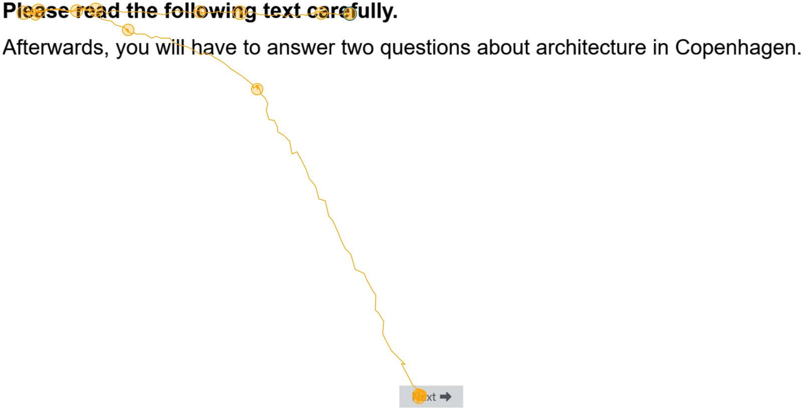
Dynamic AOIs are measurement decisions
An area of interest (AOI) is a region whose gaze iMotions summarizes. Commercial elements move and come and go, so the AOIs are dynamic, with active intervals on a timeline and key frames that move the shape with the element. The AOI master list fixes them in advance: in the simulated design Product_TV is active 14 s in Balls and 20 s in Paint, Brand_Logo the last 5 s, Tagline_Text the last 4 s, and Hero_Element 40 s and 32 s respectively. A tight shape misses real looks and a loose one catches the neighbors', the trade that treating AOIs as a signal detection problem makes explicit (Orquin et al., 2016); the Areas of Interest article suggests padding of about 1 to 1.5 degrees, roughly 1 to 2 cm at 60 cm. For a small logo, a fixation counts as inside if one of its samples is, and a dwell begins only after the dwell classification threshold, 100 ms by default.
The metrics, as iMotions defines them
In the AOI Metrics article, "parent" means the stimulus holding the AOI, here the commercial. Time to first fixation (TTFF) has three versions.
| Export column | Definition (AOI Metrics article) |
|---|---|
| TTFF AOI (ms) | From the AOI's start to the first fixation on it |
| TTFF parent (ms) | The same, from the commercial's start |
| TTFF max. (ms) | As TTFF parent; a respondent who never fixated gets the parent's full presentation duration |
| Dwell time (ms) | Total time fixating the AOI |
| Dwell time (%) | Dwell time relative to the time the AOI was active |
| Respondent ratio (%) | Percentage of respondents who fixated the AOI |
| Fixation count | Fixations inside the AOI |
| Revisit count | Returns to the AOI after the first dwell |
"How quickly after the logo appeared did viewers fixate it?" needs a clock that starts with the end card, so H2 uses TTFF AOI; TTFF parent would add the 55 s before the end card to every value. TTFF max. keeps viewers who never noticed the logo by treating never as the end of the commercial; the five never fixated rows in the simulated file carry 60,000 ms. iMotions writes NA when a metric cannot be calculated; an NA in TTFF means not observed, never zero.
In the simulated data, mean Dwell time (ms) on Product_TV was 2,974.14 in Balls and 5,697.72 in Paint, partly because the set is on screen 6 s longer in Paint. Dwell time (%) divides by each AOI's active time, so 21.24 against 28.49 percent compares like with like. For an AOI active in several separate intervals, verify the computation with a real export.
Writing the methods paragraph
The model below adapts section (a) of results_text.md; fill the brackets from the GAZE ANALYSIS tab.
Each respondent (N = 30) viewed two 60 s commercials for one brand, Balls and Paint, in counterbalanced order (15 per order), on a monitor with a Smart Eye Aurora eye tracker sampling at 60 Hz (Smart Eye, n.d.), recorded in iMotions Lab (Version 11.1; iMotions A/S, Copenhagen, Denmark, 2026). Fixations were classified with the I-VT filter (window length [ ] ms, velocity threshold [ ] degrees per second, gap fill-in [ ] ms, minimum fixation duration [ ] ms). Four dynamic areas of interest (AOIs) were active only while their element was on screen: Product_TV (14 s in Balls, 20 s in Paint), Brand_Logo (the last 5 s), Tagline_Text (the last 4 s), and Hero_Element (40 s in Balls, 32 s in Paint). Fixation based AOI metrics were exported per respondent and commercial (Individual AOI metrics export, dwell classification threshold 100 ms). Respondents with Valid data below 70 percent were excluded (R23, 58 percent), leaving 29, and a never fixated AOI was treated as TTFF not observed and dwell time zero. All numbers are simulated for teaching.
Writing "fixations were detected with the default settings." The manual states no defaults.
Help center articles for this section: Introduction to Eye Tracking, Fixation and saccade classification with the I-VT filter, Gaze smoothing filter, Areas of Interest (AOIs), and AOI Metrics.
AOIs, heatmaps, and the export
Section 06 explained what the numbers mean; this section produces them in a fixed order: analysis, single replays, group replay and heatmap, AOIs and metrics, scenes, exports. Practice on DEMO - SonyBravia (four respondents, R1 to R4) with your own analysis, leaving the rest of the study as it is. Because every viewer saw the same frame at the same moment, the AOIs are drawn once on the commercial and no gaze mapping is needed, unlike Workshop 1.
7.1 Create the analysis
Why. An analysis is a named selection of respondents and stimuli on which replays, AOIs, heatmaps, and exports are run; the raw study stays untouched. How. Hover over the study in the Library and click the analysis button (the manuals say "Create Analysis" and "Add Analysis"; use the name on the screen). Work through Segmentation Settings (Name, Comments, "Use fixations for heat maps"), Segmentation Criteria (Gender, Age, Flow, Group, Advanced Segmentation), Signal Processing (what eye tracking alone needs here should be verified on the lab machine), and Select Stimuli (both commercials and both rating slides), then click Add. Segmentation means choosing which respondents enter the analysis. You should see the analysis under the study. Common mistake. Dropping viewers whose replays look odd. In the simulated study the rule written in advance excludes R23 alone; the segmentation can leave R23 out, and the exclusion is applied in the analysis script either way.
7.2 Respondent Replay and the scan path
Why. No metric should come from a recording nobody has watched. Respondent Replay draws one viewer's gaze on the stimulus as it plays. How. In the analysis, click a commercial, then "Replay" in the Analysis bar, then "Edit result". In the Visualization menu (named Visualizations in the Gaze smoothing article; verify on the lab machine) tick "Gaze visualization"; step by Time, Frame, Gaze, Fixation, or Marker. A scan path draws fixations as circles and saccades as lines in their order, either static (all the data) or dynamic with a "Gaze trail length" of 0 to 10 seconds. The gaze smoothing filter changes the picture, never the numbers. You should see the gaze circle following the action. Common mistake. Ignoring a gaze that sits beside every object by the same distance: that is a calibration offset to note in the log, never a reason to move the AOIs.
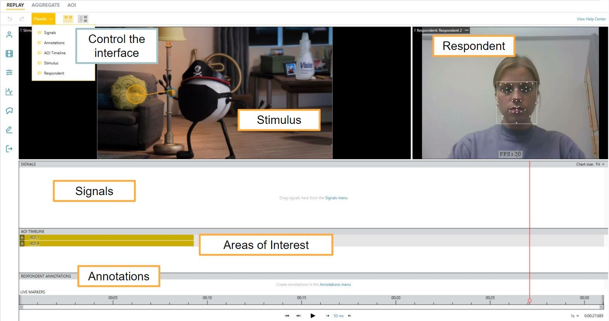
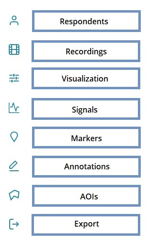
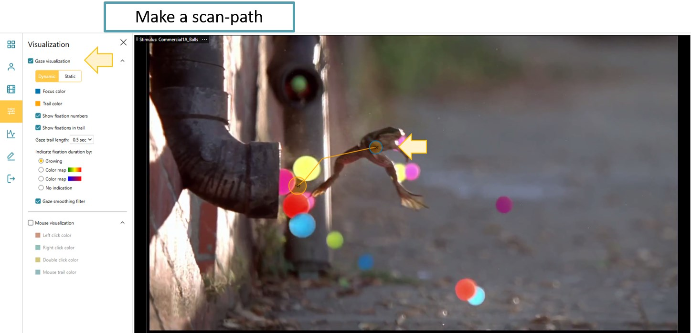
7.3 Aggregate Replay and the heatmap
Why. Aggregate Replay plays all viewers' gaze at once, showing whether the commercial pulls the group's eyes to one place. How. In the analysis, click the commercial, then "Aggregate", then "Edit result", and turn on the heatmap (heatmap or spotlight style). A heatmap is a color overlay, red where attention concentrated and transparent where nobody looked, built like a paint by numbers: the image is divided into a grid, each box gets a value from how many viewers looked and for how long, and the scale is best read as quartiles. On a video the dynamic heatmap shows only how many viewers looked at each spot at that moment, not for how long. On a still image, such as a rating slide (click the slide, then Heatmap), the color reflects both how many looked and how long, so one viewer for two seconds can equal two viewers for one second each. Export a video, image, or heatmap from the Export menu. You should see color gather on the action. Common mistake. Showing one frame as "the heatmap of the commercial" without its time and number of viewers; heatmaps are pictures, and the numbers come from AOIs.
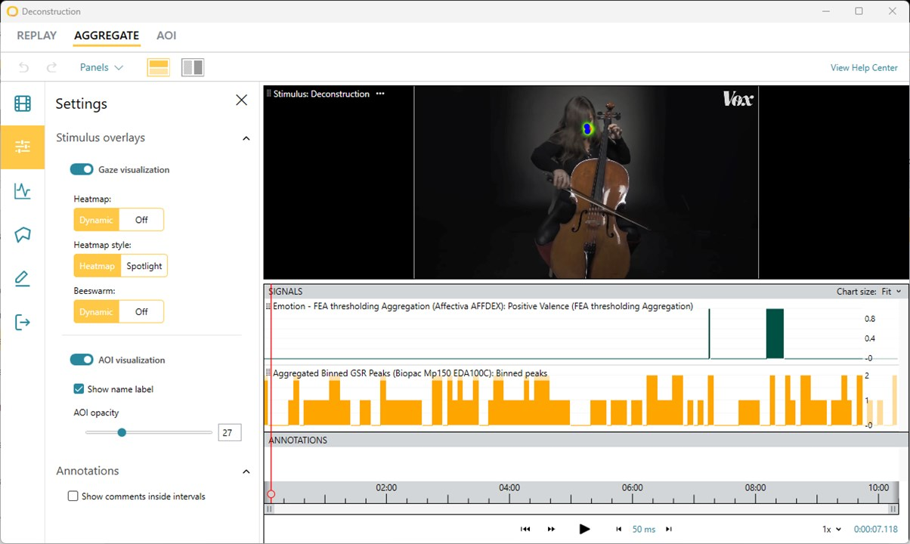
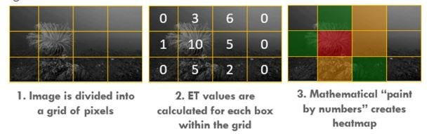
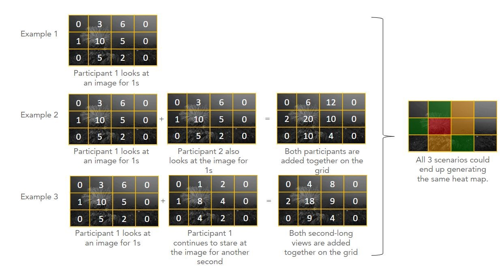
7.4 Dynamic AOIs, static AOIs, and the metrics
Why. An area of interest (AOI) is a named region in which metrics are computed. In a commercial the product moves and is on screen only part of the time, so each AOI is a dynamic AOI that follows its element and is active only while it is visible. Dwell time (%) divides by that active time, which is why Product_TV (14 s in Balls, 20 s in Paint in the simulation) can be compared as a share. How.
- Open the editor. In the analysis, click the commercial, then "AOIs", then "Open analysis".
- Draw. Click Draw AOI, type the name from the master list (Product_TV), choose a keyboard key, a tool (Rectangular, Circular, Polygonal, or Grid), and a color, and click Start drawing. Drag for a rectangle or ellipse, or click a polygon's corners (their number cannot change later). Leave a margin of about 1 to 1.5 degrees, roughly 1 to 2 cm at 60 cm (Orquin, Ashby, & Clarke, 2016). Common mistake. A shape drawn tight to the object, which loses fixations just outside it.
- Follow the element. Move the timeline cursor and move or resize the shape; every edit places a key frame. A square marks an edit at that frame; a diamond also starts a linear interpolation, so the shape glides to the next key frame.
- Set when it is active. Right-click the AOI timeline and choose Activate, Deactivate, or Delete interval, or press the AOI's key at the cursor. The manual recommends always assigning a key to a dynamic AOI, because with many AOIs switched on and off often the key is the quickest and most precise way to work. Turning an AOI off stops its metrics; hiding it does not. You should see a colored bar on the AOI TIMELINE only where the element is on screen. Common mistake. Leaving Brand_Logo active for the whole commercial, so its share is divided by 60 s instead of 5 s and TTFF AOI counts from the first frame.
- Organize. Group related AOIs with the Add group icon; save the set as a template with the import and export buttons.
- Draw the static AOIs. On each rating slide draw a static AOI around the scale; on an image or survey slide it is drawn once for every respondent.
- Calculate. Click "Calculate" in the AOI metrics menu or panel and hover over a metric's "?" for its definition. You should see one column per AOI, averaged across the respondents in the analysis. The AOI article advises preferring fixation based metrics.
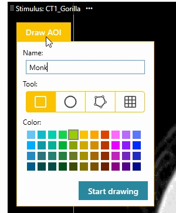
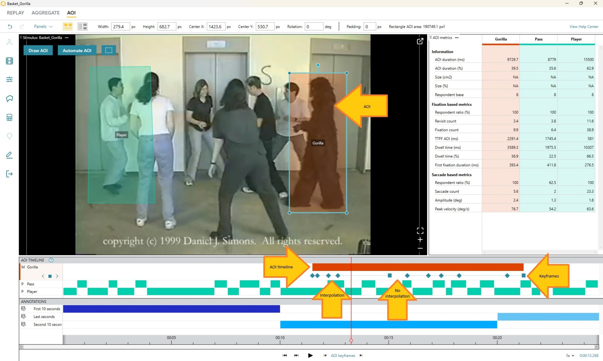
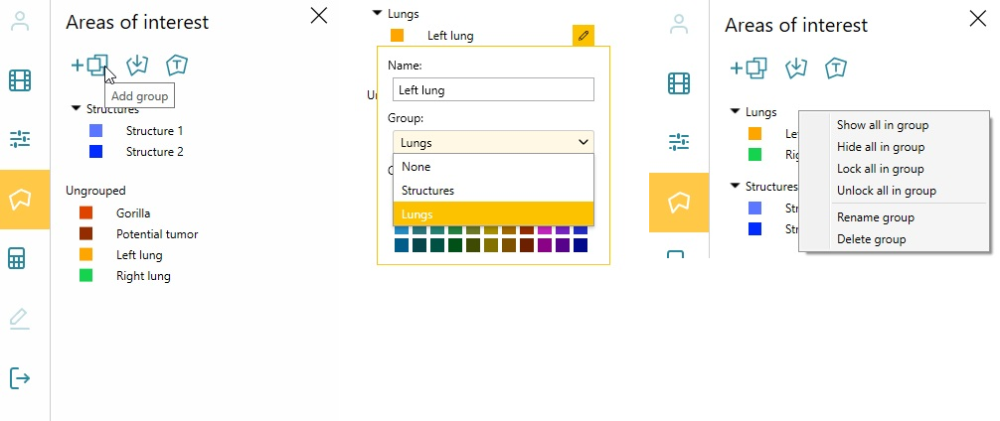
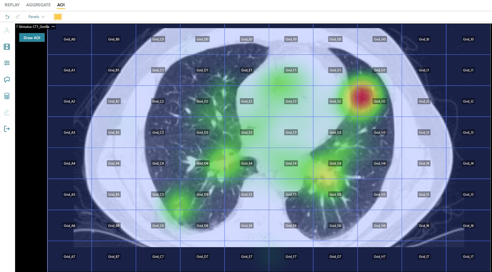

iMotions, "AOI editor feature video" (YouTube)
7.5 Annotations and markers
An annotation is a named interval on the timeline, such as "product shot" or "end card". For commercials the annotations article recommends Stimulus annotations, made once on the stimulus for every viewer. Create them in the Annotations menu and place them in the Annotations panel; for equal time bins use an Automated annotation with "Subdivide intervals" by "Length of each division" or "Number of divisions". Results export as "Individual Annotation Data.csv" and "Aggrergate Annotation Results.csv" (the manual's spelling). Live markers from the session appear in the Markers panel, and Markers menu > "Add manual marker" adds one later. You should see each annotation as a bar in the Annotations panel. Common mistake. Coding scenes as respondent annotations, which must be repeated for every viewer.
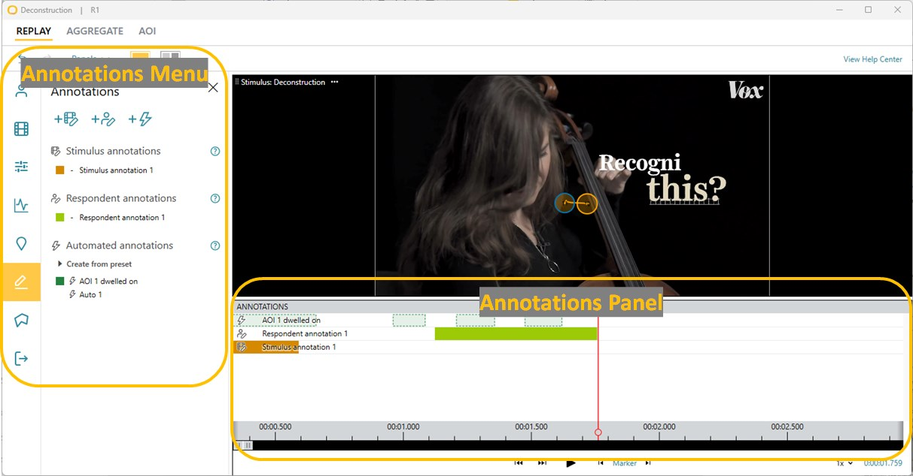
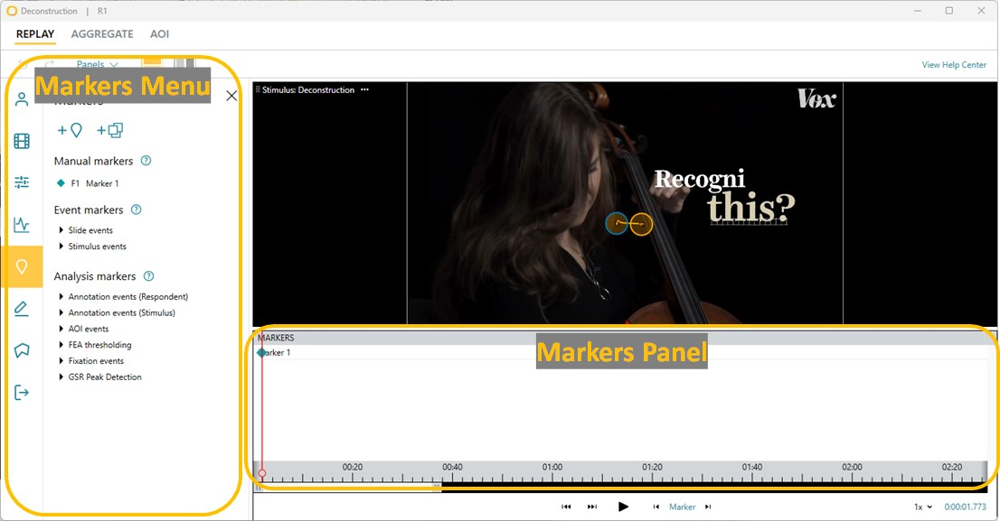
7.6 The exports
An export is a file iMotions writes for work in other software. Four matter here.
- Individual AOI metrics, the file for the statistics. In the analysis click "Export", open the "R Processing" tab, switch on "AOI Metrics Export", tick Individual AOI metrics, and keep the dwell classification threshold at its 100 ms default unless the plan says otherwise. The survey export sits on "Built in processing" instead; confirm both tabs, the export folder, and the file names on the lab machine. You should see CSV files in the export folder. The simulated AOI metrics file from section 03 is organized as one row per respondent, commercial, and AOI; verify on the lab machine that a real export has the same row structure and header layout. Common mistake. Exporting only the aggregated metrics, one average per AOI, which cannot be tested.
- Sensor data. Study > "Export" tab > "Sensor data" > blue "Export" (or right-click > Export > Sensor data). One CSV per respondent unless "Merge respondents to one file" is ticked, in blocks #INFO, #METADATA, and #DATA, with columns such as Row, Timestamp, and SlideEvent; "Include AOI markers" adds an Active and a Gazed column per AOI. It checks timing sample by sample; it is not the input for the tests.
- Data Quality Statistics. The _DataQuality.txt file from section 05, filed for the methods paragraph.
- Survey data. In the analysis, "Export", tab "Built in processing", then "Survey data per respondent", "Full survey response", or "Survey statistics" (one .txt per slide, "MERGED_SURVEY_RESPONSE_MATRIX.txt", or "SurveyStatistics.txt"), run from a master analysis holding every respondent.
Open every export through Excel's Text Import Wizard, never by double-clicking: the files are comma separated with a dot as the decimal mark, and a double-click applies the computer's regional settings. Choose Open, "Browse", file type "All Files" or "Text files", then "Delimited" from row 1, "Comma", "Advanced" to set the dot as decimal separator, and "Finish". Save a working copy as .xlsx and keep the original unchanged.
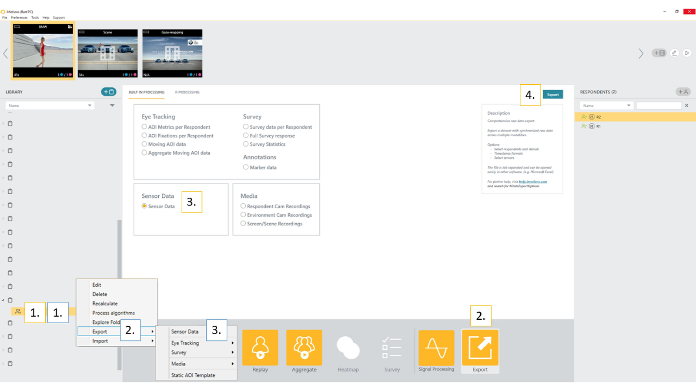

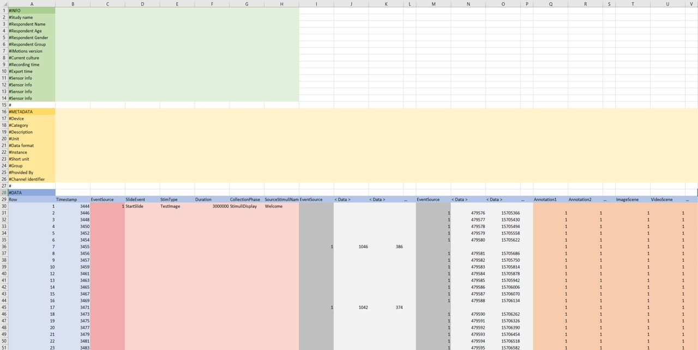
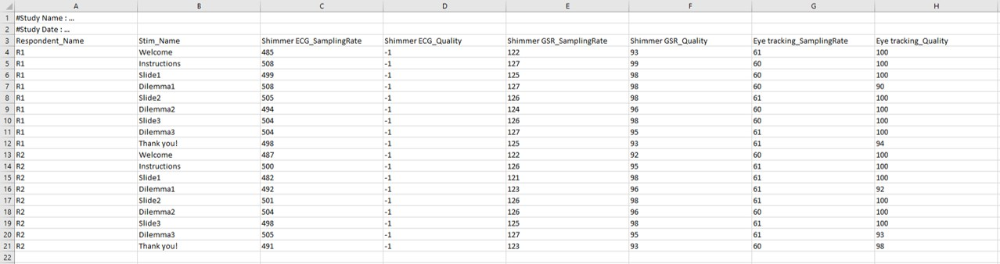
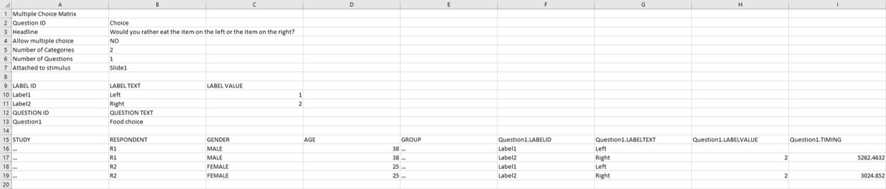
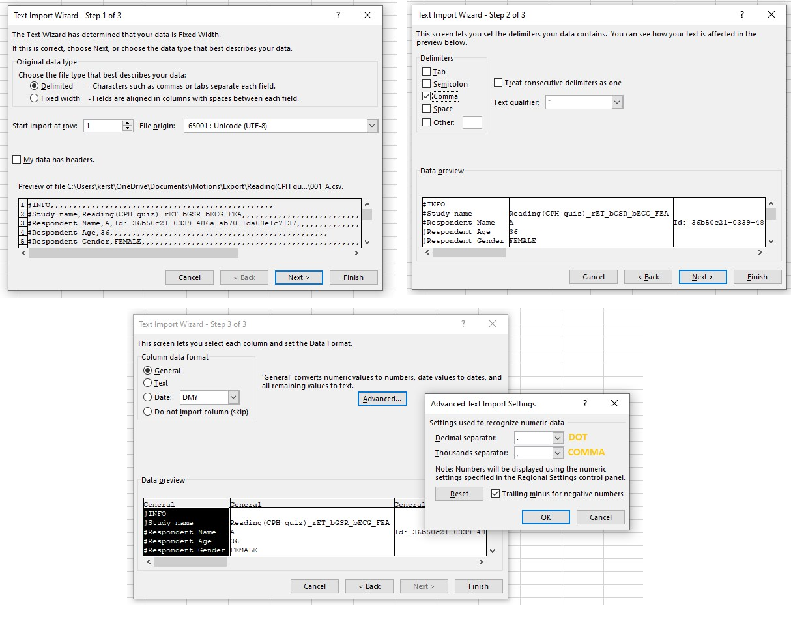
Help center articles for this section: Replay and Analysis Windows, Respondent Replay, Aggregate Replay, Areas of Interest (AOIs), How to Create AOIs, AOI Metrics, Heatmaps, Basic Heatmap Explanation and Generation, Scan Paths and Individual Heatmaps, Using Annotations, Export: Sensor Data, Export: Data Quality Statistics, Export: Survey data, Opening Data Export Files in Excel.
Testing the hypotheses: paired tests, an order check, and what to do when two tests disagree
This section runs the three hypothesis tests on the SIMULATED export, in R with analysis.R (output in analysis_output.txt) and then in Excel. Every statistic is simulated and matches that output exactly.
From 240 rows to 29 viewers
The simulated export, SIMULATED_ad_test_AOI_metrics.csv, has one row per respondent, commercial, and AOI, 240 in all. The rule written in advance removes R23 (Valid data 58 percent), leaving 29 viewers (14 in Group A, 15 in Group B) and 232 rows. Five rows have no fixation (Brand_Logo twice in each commercial, Tagline_Text once in Paint): TTFF stays NA, Dwell time and Fixation count become zero, and TTFF max. (ms) reads 60,000. The viewer, not the row, is the unit of analysis.
| AOI (simulated) | Commercial | Active (s) | Resp. ratio % | TTFF AOI M (SD) ms | Dwell % M (SD) |
|---|---|---|---|---|---|
| Product_TV | Balls | 14 | 100.0 | 1,057.07 (475.44) | 21.24 (6.62) |
| Product_TV | Paint | 20 | 100.0 | 952.93 (464.57) | 28.49 (7.75) |
| Brand_Logo | Balls | 5 | 93.1 | 906.93 (249.81) | 38.28 (17.31) |
| Brand_Logo | Paint | 5 | 93.1 | 773.48 (199.21) | 38.72 (17.10) |
| Tagline_Text | Balls | 4 | 100.0 | 1,321.66 (346.85) | 29.00 (11.85) |
| Tagline_Text | Paint | 4 | 96.6 | 1,325.32 (387.71) | 30.63 (12.21) |
| Hero_Element | Balls | 40 | 100.0 | 708.28 (298.80) | 53.73 (9.93) |
| Hero_Element | Paint | 32 | 100.0 | 711.14 (332.15) | 44.90 (6.86) |
Note: SIMULATED, 29 viewers per row. TTFF AOI averages viewers who fixated the AOI; dwell share counts never fixated AOIs as zero.
H1: the paired t test
For each viewer, subtract the Balls value from the Paint value. With no real difference, these would average about zero. The paired t test asks whether the average difference is far from zero relative to how much the differences vary. It is a one sample t test on the differences, so a viewer who looks at everything a lot cancels out in the subtraction.
Simulated H1: Md = 7.25 percentage points (Paint minus Balls), SDd = 7.40, n = 29, so t(28) = 5.27, p < .001; 95% CI of the difference [4.43, 10.06].
If you did Workshop 1, you used Welch's test, which compares two independent groups; here both columns come from the same 29 people in a within subjects design, and a viewer's two dwell shares correlate, r = .48 (simulated). The paired test removes that shared part from the error, the source of its power. In Excel it is one argument: T.TEST type 1 (paired) instead of type 3.
The effect size for a paired test is dz, the mean difference divided by the SD of the differences (Lakens, 2013). For H1, dz = 0.98 with a 95 percent confidence interval of [0.53, 1.42] from the noncentral t distribution, a large effect by the usual labels (Cohen, 1992); Paint was higher for 25 of 29 viewers (simulated). Its denominator is the spread of differences, not of scores, so dz is not comparable to a between subjects d. The Wilcoxon signed rank test, which ranks the differences instead of assuming they are normal, agreed: V = 402, p < .001.
H2: the logo and the missing TTFF problem
The logo was fixated by 27 of 29 viewers (93.1 percent) in each commercial. A pair needs a TTFF in both, so the test uses 25 viewers: TTFF AOI was shorter for Paint (M = 786.96 ms, SD = 192.27) than for Balls (M = 906.76 ms, SD = 242.15), a difference of -119.80 ms, 95% CI [-256.30, 16.70], but it did not reach significance, t(24) = -1.81, p = .083, dz = -0.36, 95% CI [-0.76, 0.05]. The Wilcoxon test gave V = 88, p = .046. When two tests fall on opposite sides of .05, report both with the interval and call the result uncertain (simulated).
Three codings of never fixated answer three questions. Complete pairs ask how fast viewers who noticed the logo in both commercials noticed it. The sensitivity analysis H2b keeps all 29 by coding a never fixated logo as 5,000 ms, the end card's length: the difference stays similar, -124.24 ms, but the SD of the differences grows from 330.69 to 1,635.97 ms and the test loses its precision, t(28) = -0.41, p = .686 (simulated). TTFF max. would count from the commercial's start, with 60,000 ms for never, a third question. Report the chosen coding and its alternatives.
H3: liking on a 7 point scale
Liking was higher for Balls (M = 5.52, SD = 0.91) than for Paint (M = 5.00, SD = 1.13), t(28) = -2.56, p = .016, dz = -0.47, 95% CI [-0.86, -0.09]. Ratings are whole numbers and 17 of 29 viewers gave both commercials the same one, so their differences departed from normality (Shapiro Wilk p < .001) and the Wilcoxon test is reported beside the t test, V = 9, p = .017. The product dwell difference and the liking difference were unrelated, r = .04, p = .844 (simulated).
The order effect and the mixed model
The commercial seen second can benefit from the first, a carryover that counterbalancing spreads evenly over both commercials. A linear mixed effects model measures it: dwell_pct ~ commercial * order_position + (1 | respondent) (Bates et al., 2015), with fixed effects coded -0.5 and +0.5 and a random intercept as each viewer's personal baseline. The commercial effect was b = 7.37, SE = 1.21, t(27) = 6.07, p < .001. The order effect was b = 3.61, SE = 1.21, t(27) = 2.97, p = .006, 95% CI [1.12, 6.10]. The interaction did not reach significance, b = 1.87, p = .691. The random intercept SD was 5.36 against a residual SD of 4.62, an intraclass correlation (ICC) of .574 (.185 without the fixed effects): more than half of the remaining variance lay between viewers (simulated). Two commercials are two stimuli; generalizing to commercials would need many of them as a random factor (Judd et al., 2012) and a sample sized for that (Brysbaert & Stevens, 2018).
Recall, assumptions, and figures
Recall is one answer per viewer, so logo attention is each viewer's total Brand_Logo Dwell time (ms). Its correlation with recall coded 0 or 1, the point biserial correlation, was rpb(27) = .42, 95% CI [.06, .68], p = .025; 24 of 29 viewers (82.8 percent) recalled the brand. QQ plots and Shapiro Wilk tests showed no departure from normality for H1 (p = .970), H2 (p = .676), the model residuals (p = .806), or the intercepts (p = .976); H3 departed, as whole number ratings must (simulated).
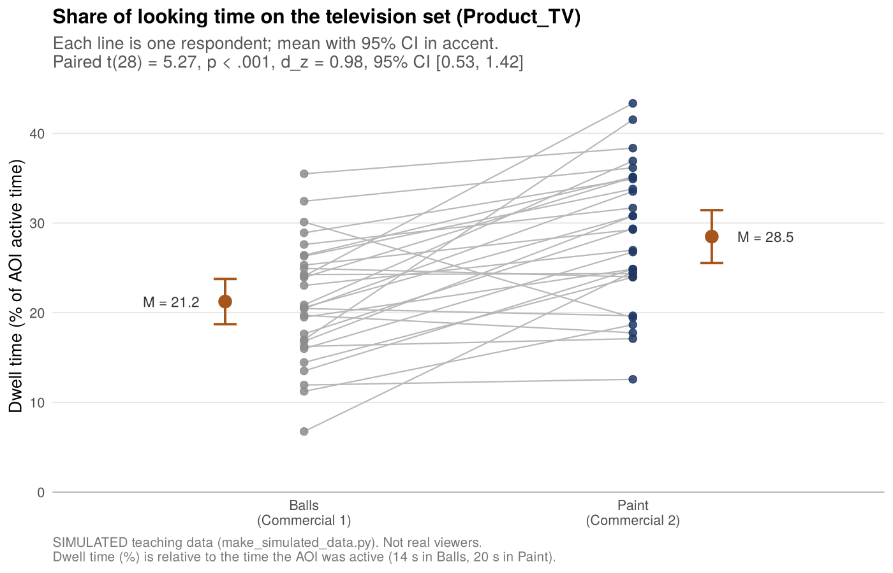
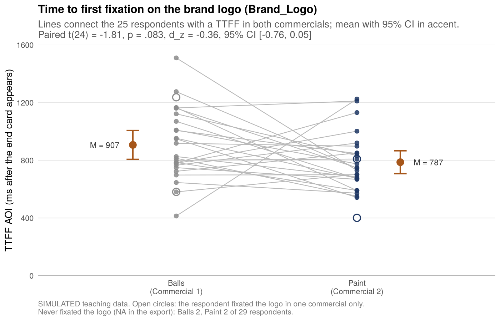
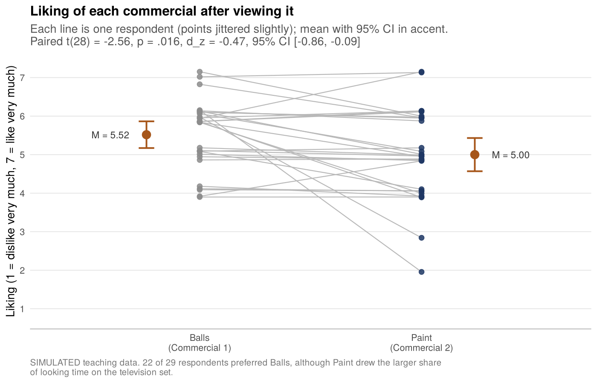
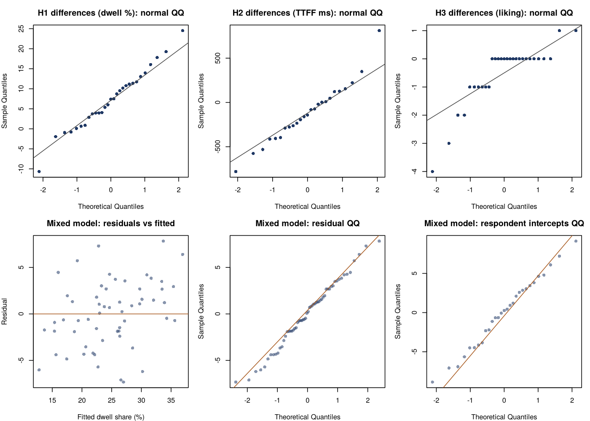
The script, line by line
Code from analysis.R, in order, with its output of October 7, 2026.
The Excel route
Without R, use SIMULATED_ad_test_analysis.xlsx and analysis_excel_walkthrough.md. Import each file with Excel's Text Import Wizard, as the Opening Data Export Files in Excel article describes: File > Open > Browse, file type All Files, then Delimited, start import at row 2 (the first line of each SIMULATED file is a # SIMULATED comment), Comma, and under Advanced a dot as the decimal separator, then Finish. Then add helper columns, reshape to one row per viewer, and compute:
| Quantity | Cell | Formula | Simulated result |
|---|---|---|---|
| Keep | Data!Z2 | =IF(L2>=70,"Yes","No") | No for R23 |
| Dwell_pct_clean | Data!AB2 | =IF(ISNUMBER(W2),W2,0) | 0 if never fixated |
| Balls Dwell time (%) | ProductTV!D5 | =SUMIFS(Data!$AB$2:$AB$241,Data!$B$2:$B$241,$A5,Data!$H$2:$H$241,"Product_TV",Data!$G$2:$G$241,"Commercial_1_Balls") | per viewer |
| Difference (Paint minus Balls) | ProductTV!F5 | =E5-D5 | per viewer |
| Mean difference | ProductTV!J11 | =AVERAGE(F5:F33) | 7.25 |
| SD of the differences | ProductTV!J12 | =STDEV.S(F5:F33) | 7.40 |
| SE of the mean difference | ProductTV!J13 | =J12/SQRT(J10) | 1.374 |
| Paired t | ProductTV!J14 | =J11/J13 | 5.27 |
| p, two tailed, paired | ProductTV!J16 | =T.TEST(D5:D33,E5:E33,2,1) | 0.000013 |
| Cohen's dz | ProductTV!J21 | =J11/J12 | 0.98 |
| dz 95% CI | ProductTV!J23, ProductTV!J24 | =J21-1.96*J22, =J21+1.96*J22 | 0.54, 1.42 |
| Order effect | ProductTV!J32 | =(J28-J29)/2 | 3.61 |
| H2 p | BrandLogo!H16 | =T.TEST(C5:C29,D5:D29,2,1) | 0.082620 |
| H3 p | Survey!N15 | =T.TEST(D4:D32,E4:E32,2,1) | 0.016290 |
T.TEST's fourth argument 1 means paired; 2 and 3 treat the columns as different people. T.TEST returns only p, so t and dz are computed by hand; Excel's large sample interval for dz starts at 0.54, R's at 0.53 (simulated). The Wilcoxon tests, the mixed model, and H2b need R.
Help center articles for this section: Opening Data Export Files in Excel and General Data Analysis and Interpretation.
Writing the results: paired statistics in sentences, a table, and honest pictures of video
A results section reports what was found in the planned order and leaves interpretation to the discussion. Readers expect the sample, the descriptives, a test and an effect size with its interval per hypothesis, and captions that stand alone (Appelbaum et al., 2018). Every statistic here is simulated; the form is the lesson.
The shape of a within subjects results section
Open with the sample: 29 respondents (14 in Group A, 15 in Group B) after one exclusion. State once that every difference is Paint minus Balls. Take the hypotheses in order, each with the means and SDs, the mean difference with its interval, the paired t test, dz with its interval, and the Wilcoxon check in a clause. Put the order check after H1, which it qualifies. Report every planned test, including those that did not reach significance, and label exploratory results.
APA numbers for paired tests
APA style keeps numbers readable (simulated values): M = 28.49, SD = 7.75 with the unit once; the statistic with its degrees of freedom, t(28) = 5.27, then p, then the effect size with its interval, dz = 0.98, 95% CI [0.53, 1.42]. Give exact p values to three decimals (p = .016), and p < .001 only below that. Drop the leading zero for statistics that cannot exceed 1 (r = .48, ICC = .574). Match the sign to the direction stated in words, and write "did not reach significance," never "trend toward significance."
Model paragraphs (simulated)
Quoted from section (b) of results_text.md.
Viewers spent a larger share of the time the television set was on screen fixating it in Paint than in Balls. Dwell time (%) on Product_TV was higher for Paint (M = 28.49%, SD = 7.75) than for Balls (M = 21.24%, SD = 6.62), n = 29, a mean difference of 7.25 percentage points, 95% CI [4.43, 10.06], paired t(28) = 5.27, p < .001, dz = 0.98, 95% CI [0.53, 1.42]. A Wilcoxon signed rank test agreed (V = 402, p < .001), and the differences showed no departure from normality (Shapiro Wilk p = .970). A respondent's two dwell shares were positively correlated (r = .48), which is the source of the power of the paired design.
In the mixed model of Product_TV dwell share, the commercial effect was b = 7.37, SE = 1.21, t(27) = 6.07, p < .001, 95% CI [4.88, 9.86]. Order position also had an effect: the commercial seen second drew 3.61 percentage points more Product_TV dwell share than the same commercial seen first, SE = 1.21, t(27) = 2.97, p = .006, 95% CI [1.12, 6.10] (cell means: Balls 19.86% when seen first and 22.54% when seen second; Paint 26.29% first and 30.84% second). The commercial by order position interaction did not reach significance, b = 1.87, SE = 4.67, t(27) = 0.40, p = .691, 95% CI [-7.71, 11.45]; it is a comparison between the two order groups and therefore has a wide interval. The random intercept for respondent (SD = 5.36 percentage points, residual SD = 4.62) gave an ICC of .574 after adjustment for the fixed effects (.185 in a model without them), so more than half of the variance that remained lay between viewers.
The logo was fixated at least once by 27 of 29 respondents (93.1%) in each commercial (exact McNemar test of the two respondent ratios, p = 1.000), and 25 respondents had a TTFF in both commercials. Among these 25, the time to first fixation on Brand_Logo was shorter for Paint (M = 786.96 ms, SD = 192.27) than for Balls (M = 906.76 ms, SD = 242.15), a mean difference of -119.80 ms, 95% CI [-256.30, 16.70], but the difference did not reach significance, paired t(24) = -1.81, p = .083, dz = -0.36, 95% CI [-0.76, 0.05]. The Wilcoxon signed rank test gave V = 88, p = .046, so the two tests fell on opposite sides of .05 and the conclusion should be stated as uncertain. When the four respondents with a missing TTFF were kept by assigning 5000 ms to the commercial in which they never fixated the logo, the mean difference was similar in size but far less precise, -124.24 ms, 95% CI [-746.53, 498.05], t(28) = -0.41, p = .686, dz = -0.08, 95% CI [-0.44, 0.29] (Wilcoxon V = 142, p = .105), so the result depends on how never fixated logos are handled.
Liking was higher for Balls (M = 5.52, SD = 0.91) than for Paint (M = 5.00, SD = 1.13), a mean difference of -0.52 points, 95% CI [-0.93, -0.10], paired t(28) = -2.56, p = .016, dz = -0.47, 95% CI [-0.86, -0.09]; the Wilcoxon signed rank test agreed (V = 9, p = .017). Ten respondents rated Balls higher, 2 rated Paint higher, and 17 gave the two commercials the same rating. When forced to choose, 22 of 29 respondents (75.9%) preferred Balls, 95% CI [56.5%, 89.7%], exact binomial p = .008. Attention and liking pointed in opposite directions: Paint drew the larger Product_TV dwell share for 25 of 29 respondents, yet Balls was the better liked commercial, and the respondent level difference in product dwell share was unrelated to the difference in liking, r = .04, 95% CI [-.33, .40], p = .844 (exploratory).
A model table
| Table 1 (simulated). Measure | n | Balls M (SD) | Paint M (SD) | Difference [95% CI] | t (df) | p | dz [95% CI] |
|---|---|---|---|---|---|---|---|
| H1 Product_TV Dwell time (%) | 29 | 21.24 (6.62) | 28.49 (7.75) | 7.25 [4.43, 10.06] | 5.27 (28) | < .001 | 0.98 [0.53, 1.42] |
| H2 Brand_Logo TTFF AOI (ms), complete pairs | 25 | 906.76 (242.15) | 786.96 (192.27) | -119.80 [-256.30, 16.70] | -1.81 (24) | .083 | -0.36 [-0.76, 0.05] |
| H2b never fixated coded 5,000 ms | 29 | 1,189.21 (1,082.63) | 1,064.97 (1,106.71) | -124.24 [-746.53, 498.05] | -0.41 (28) | .686 | -0.08 [-0.44, 0.29] |
| H3 Liking (1 to 7) | 29 | 5.52 (0.91) | 5.00 (1.13) | -0.52 [-0.93, -0.10] | -2.56 (28) | .016 | -0.47 [-0.86, -0.09] |
Note. SIMULATED teaching data; differences are Paint minus Balls. Wilcoxon signed rank tests: V = 402, 88, 142, and 9, p < .001, .046, .105, and .017.
A model figure caption
A caption says what is plotted, for whom, over what interval, and what the marks mean:
Heatmaps and scan paths of a commercial, honestly
On a still image a heatmap mixes how many viewers looked and how long. On a video, the Heatmaps article says, the dynamic heatmap in Aggregate Replay shows only how many looked at each location at that moment. A heatmap of a commercial is therefore a moment (one exported frame) or an interval (a scene), and its caption says which, with the time code and the number of viewers. Heatmaps are "purely qualitative visualizations" (Introduction to Eye Tracking) whose color scale "can be thought of as quartiles" (Basic Heatmap Explanation and Generation), so red is relative to that picture. A scan path shows one viewer's fixations in order; label it with the respondent and interval. Set the AOI numbers beside every picture.
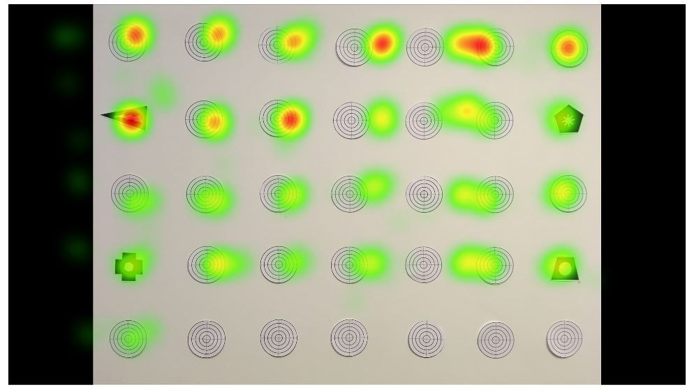
The client version
Three sentences carry the direction, the size, and the hedge.
Paint kept viewers' eyes on the television set for a larger share of the product shots than Balls, about 28 against 21 percent of the time. Viewers still liked Balls more, and 22 of 29 preferred it, so product attention did not turn into liking. Of 29 viewers, 25 fixated the logo in both commercials (27 of 29 in each), and which logo was seen faster is uncertain, so logo timing should not decide between the commercials. Caveat: two commercials and 29 viewers in a laboratory, simulated for teaching; a real decision needs a replication and an outcome such as recall or choice.
Help center articles for this section: Heatmaps, Basic Heatmap Explanation and Generation, Aggregate Replay, and Scan Paths and Individual Heatmaps.
Discussion and publication: when attention and liking disagree, what limits the claim, and where the work goes
The discussion answers the client's question from section 01, says what the answer means for theory and practice, lists the limitations that bound it, and places the work in a literature. It is also where overclaiming happens, so every claim below is tied to a result or a source. The numbers are simulated.
What the result means
The central finding is a dissociation: Paint held the eyes on the product, while Balls was liked more and preferred by 22 of 29 viewers (simulated). Dwell time shows where attention went, not how the viewer felt about it. Emotional responses shape how viewers engage with video advertising (Teixeira et al., 2012), and physiological and self report measures capture different aspects of an advertisement (Venkatraman et al., 2015), so reading a long dwell as liking is the reverse inference consumer neuroscience warns against (Plassmann et al., 2015). Branding is a question of timing: brand presence over the course of a commercial affects whether viewers keep watching (Teixeira et al., 2010), and brand information placed where attention concentrates survives fast forwarding (Brasel & Gips, 2008); here the logo timing difference stayed uncertain. The hero elements, the balls and the paint, held about half of their active time, the kind of attention that visual complexity and stopping power research studies (Pieters et al., 2010). Fixations on the brand predict memory for it (Wedel & Pieters, 2000), which fits the recall correlation, rpb = .42, though it rests on five viewers who did not recall the brand.
In these simulated data, the two commercials separated attention from attitude. Paint held the viewers' eyes on the television set for a larger share of the time the set was on screen (about seven percentage points, a large paired effect), yet Balls was the better liked and the more often preferred commercial, and the respondents who gave Paint more product attention were no more likely to like it. Dwell time shows where attention went, not how the viewer felt about what was seen, so the eye tracking result needs a criterion measure such as recall, stated intent, or choice before it is read as an advantage for the brand. Brand recall was higher among respondents who looked longer at the logo, but the association is correlational and rests on only five respondents who did not recall the brand. The order effect of about 3.6 percentage points shows why a within subjects test of commercials must be counterbalanced: because about half of the viewers saw each commercial first, the carryover averaged out of the commercial comparison, whereas a fixed order would have added it to the commercial seen second and overstated its advantage.
Limitations of a screen based test of commercials
- Dynamic AOI decisions. Every metric depends on the active intervals, key frames, size, and padding the analyst drew. A short active interval gives a noisier share, and a more generous AOI catches more fixations. Report the AOI definitions with the results.
- 60 Hz and a small logo. One sample every 16.67 ms makes TTFF and short fixations coarse, and a small AOI is sensitive to calibration accuracy; the simulated exclusion of R23 shows how tracking quality limits the sample.
- Missing TTFF. Complete pairs, a 5,000 ms coding, and TTFF max. answer different questions and gave results of different precision. Say which you used.
- Two stimuli. Story, music, product shot length, and end card layout all differ, so the result cannot be generalized to other commercials without a sample of them (Judd et al., 2012).
- Order. Counterbalancing removed the order effect from the comparison but not from the noise.
- The laboratory. Viewers watch without distraction and know they are observed, a demand effect that may inflate attention to the product and logo, and the rating slide may draw attention to what was just shown.
- The sample. Twenty-nine simulated viewers, three hypotheses without correction, and an H2 result on either side of .05.
What other sensors would add
Eye tracking says where and when. Facial expression analysis, the subject of Workshop 3, records expressions moment by moment and can show whether the product shots in Paint or the hero moments in Balls coincide with smiles. Skin conductance, the subject of Workshop 4, records physiological arousal over the same timeline. Neither says why a viewer looked or replaces the liking question, and both bring their own processing steps and limits.
Replication, preregistration, and ethics
A preregistration time stamps the hypotheses, the primary metric for each, the AOI master list with active intervals, the exclusion rule, the TTFF coding, and the tests before the first viewer. A replication would add commercials as a stimulus sample and size the study for it (Brysbaert & Stevens, 2018). Gaze data can reveal more about a person than the person expects (Kröger et al., 2020), and the industry code sets out consent, privacy, and participant rights (Neuromarketing Science & Business Association, n.d.). At Jacksonville State a study that will be published or presented first goes to the IRB, and every session needs informed consent that names the gaze recording and a retention period.
Where this work is published, and what reviewers ask
- Journal of Advertising, Journal of Advertising Research, and International Journal of Advertising, for advertising effects and executions.
- Journal of Marketing Research and Journal of Consumer Research, for a theoretical contribution, for example on attention and attitude.
- Behavior Research Methods, for a method contribution, where several eye tracking methods papers cited here appeared (Nyström et al., 2013) (Niehorster et al., 2018).
Reviewers ask whether the hypotheses and analysis were set in advance, whether the report meets the reporting standards (Appelbaum et al., 2018), whether the metrics are defined in the field's terms (Holmqvist et al., 2011), whether data quality is reported (Holmqvist et al., 2012), and whether the eye tracker showed something a survey could not.
Next steps: Workshops 3 and 4
Workshop 3 adds facial expression analysis with the lab's Affectiva AFFDEX module, and Workshop 4 adds skin conductance with the Shimmer3 GSR+ units. Both keep this workshop's design: the same commercials, the same AOIs and annotations on the timeline, the same within subjects comparison, and the same habit of writing the hypotheses before anyone sits down.
Help center articles for this section: Designing Your Research Study and Export: Data Quality Statistics.
Resources: where every step of this workshop comes from
Nothing in this workshop was invented. Every menu path comes from an iMotions help center article or from a screen capture of the lab laptop, every design rule comes from a published source, and every number in the analysis comes from the simulated data files listed under (e). This section collects all of it in six groups, so that you can go to the original when a step in the lesson is not enough. The help center at help.imotions.com is reached signed in through my.imotions.com with the lab account; every article also has a Markdown twin at the page address followed by .md. The manual PDFs under (b) are the lab's own downloaded copies, which iMotions has given Dr. Sciuchetti permission to share with this class. Most printed manuals date from iMotions 9 and 10, so where a manual and the lab laptop disagree, the lab laptop running iMotions Lab 11.1 is the reference.
(a) iMotions help center articles used in this workshop
- Introduction to: Eye Tracking. What a screen based tracker records: pupil center corneal reflection, one gaze point per sample (16.67 ms at 60 Hz), fixations and saccades, and why heatmaps need AOIs beside them. (Steps 00 and 06)
- Designing Your Research Study. The research question and hypothesis before data, the warning against fishing, the 20 to 60 people per condition guidance, and within subjects designs with counterbalancing. (Steps 01 and 02)
- Using a test plan for study design. A CSV test plan with a Stimuli folder as the alternative to building respondents by hand; no respondents can be added after recording starts. (Steps 02 and 04)
- Standard Methodologies: Static Image Testing. The iMotions method page behind the objectives and study flow figures in Step 02; the lab's PDF copy is image only, so read it on screen. (Step 02)
- Standard Methodologies: TV and Digital Ad Testing. The iMotions method page for testing television and digital ads; the lab's PDF copy is image only, so read it online. (Step 02)
- Respondent informed consent and data privacy FAQ. What iMotions says about consent, identifiable recordings, and data retention. (Step 02)
- Demo study: Sony Bravia (Testing of video-commercials) - 9.0. The help center page for the Sony Bravia demonstration study. Where it differs from DEMO - SonyBravia in the lab Library, the study on the lab laptop is the reference for this workshop. (Step 03)
- Using the iMotions Study Builder. New Study and the Screen-based type, the respondent screen, Edit stimuli with the Flow designer and the Stimuli overview, blocks, flows, and flow allocation. (Step 04)
- iMotions Survey Stimuli and Elements. The survey slide designer, the Scale element, the Question ID, Save to Study, and the rule that Display Scaling must be 100 percent. (Step 04)
- Re-Encoding of Incompatible Video Stimuli. Previewing videos for lag or flicker and the Convert videos for compatibility command. (Step 04)
- iMotions Global Settings. Opened from the top left menu or Alt+G; the Eye Tracking tab holds Eye Tracking Server, Model, Host Address, and Test Connection. (Step 05)
- Setting up Aurora or AI-X in iMotions. The Smart Eye Tracker software, the Smart Eye Setup Tool, mounting the Aurora, connecting it, and the Eye Tracker widget. (Step 05)
- Planning for Eye Tracker Calibration. Lighting, the 60 cm seating distance, the Eye Finder, at least 9 calibration points, and what to do after Excellent, Good, or Poor. (Step 05)
- Setting up Participant-guided Eye Tracker Calibration. The Respondent guided calibration mode on the study settings. (Step 05)
- One-Screen Calibration: Configurations and Settings. Regular and Compact calibration modes, the green and red sensor bars, and Continue, Back, and Override. (Step 05)
- Data Collection Overview. Selecting the study, adding a respondent, and starting a recording, with the eye tracker widget showing whether the eyes are detected. (Step 05)
- Sensor Preview Window. The experimenter's live view during a recording, available only on a two screen setup. (Step 05)
- Using Event Markers. Live markers defined on the study's Live Markers tab before recording and pressed during a session (default key F3). (Steps 05 and 07)
- Export: Data Quality Statistics. The _DataQuality.txt file exported from a study's RECORDED DATA tab, with the effective sampling rate and the percentage of data obtained. (Steps 05 and 07)
- Fixation and saccade classification with the I-VT filter. The filter parameters on the GAZE ANALYSIS tab and the note that I-VT is typically used for data sampled at 200 Hz or more. (Step 06)
- Gaze smoothing filter. A filter for the picture only; fixations and exports do not change. (Step 06)
- AOI Metrics. The 48 metric definitions, including TTFF AOI, TTFF parent, TTFF max., Dwell time (%), and Respondent ratio (%). (Steps 06 and 07)
- Areas of Interest (AOIs). The AOI editor, dynamic AOIs with key frames and active intervals, groups and templates, and the export options. (Steps 06 and 07)
- Analysis Overview. Adding an analysis from the Library and choosing its stimuli. (Step 07)
- Replay and Analysis Windows. Create Analysis, the segmentation screens, and the replay window. (Step 07)
- Respondent Replay. Replaying one viewer with gaze visualization, stepping by time, frame, gaze, fixation, or marker. (Step 07)
- Aggregate Replay. Replaying all viewers of a stimulus together and making the dynamic heatmap. (Step 07)
- How to Create AOIs. Drawing static and dynamic AOIs step by step. (Step 07)
- Heatmaps. Static and dynamic heatmaps; on a video, the color shows how many viewers looked at each moment. (Step 07)
- Basic Heatmap Explanation and Generation. How the heatmap grid is computed and why its scale can be read as quartiles. (Step 07)
- Scan Paths and Individual Heatmaps. Per viewer fixation circles and saccade lines, static or with a gaze trail. (Step 07)
- Using Annotations. Stimulus annotations for the scenes of a commercial and automated time bins with Subdivide intervals. (Step 07)
- Export: Sensor Data. The sample by sample export, its file sections, and the per AOI Active and Gazed columns. (Step 07)
- Export: Survey data. Survey data per respondent, Full survey response, and Survey statistics. (Step 07)
- Opening Data Export Files in Excel. The Text Import Wizard route into Excel, and why not to double click a .csv export. (Steps 07 and 08)
- General Data Analysis and Interpretation. Descriptive statistics first, a t test for two groups, and the warning that multiple comparisons inflate false positives. (Step 08)
(b) The lab's manual PDFs on this site
Local copies of the articles above, for the moments at the lab computer when you cannot sign in. The first twenty one are new with this workshop.
- Introduction to Eye Tracking.pdf. Screen based eye tracking, PCCR, gaze points, fixations, and saccades (7 pages); online title: Introduction to: Eye Tracking.
- Standard Methodologies Static Image Testing.pdf. The static image testing method page (3 pages); its pages are images, so the text cannot be searched.
- Using the iMotions Study Builder.pdf. The New Study dialog, the respondent screen, the Flow designer, flows, and blocks (10 pages).
- iMotions Survey Stimuli and Elements.pdf. The survey slide designer and its elements, including the Scale element (22 pages).
- ReEncoding of Incompatible Video Stimuli.pdf. Converting videos that lag or flicker in the preview (4 pages).
- Setting up Aurora or AIX in iMotions.pdf. Installing, mounting, and connecting the Aurora (11 pages); online title: Setting up Aurora or AI-X in iMotions.
- Planning for Eye Tracker Calibration.pdf. Lighting, seating, the Eye Finder, calibration points, and the result labels (10 pages).
- Setting up Participantguided Eye Tracker Calibration.pdf. The Respondent guided calibration mode (5 pages); online title: Setting up Participant-guided Eye Tracker Calibration.
- OneScreen Calibration Configurations and Settings.pdf. Regular and Compact modes and the sensor status window (9 pages); online title: One-Screen Calibration: Configurations and Settings.
- Using Event Markers.pdf. Built in and user created markers, including live markers (8 pages).
- Export Data Quality Statistics.pdf. The data quality export from the RECORDED DATA tab (4 pages).
- Gaze smoothing filter.pdf. The visualization only smoothing filter (4 pages).
- Areas of Interest AOIs.pdf. The AOI editor, dynamic AOIs, and the export options; online title: Areas of Interest (AOIs).
- Replay and Analysis Windows.pdf. Creating an analysis and reading the replay window (11 pages).
- Respondent Replay.pdf. Replaying one respondent, with the visualization and step options (30 pages).
- Aggregate Replay.pdf. Replaying all respondents together and the dynamic heatmap (10 pages).
- Basic Heatmap Explanation and Generation.pdf. How heatmaps are computed and how to read the scale.
- Using Annotations.pdf. Stimulus, respondent, and automated annotations (23 pages).
- Export Sensor Data.pdf. The Sensor data export and its options (14 pages).
- Export Survey data.pdf. The three survey exports (6 pages).
- Opening Data Export Files in Excel.pdf. The Text Import Wizard route into Excel (8 pages).
Already on the site from Workshop 1 and used again here:
- Designing Your Research Study.pdf. The iMotions study design guide that Steps 01 and 02 follow (13 pages).
- Using a Test Plan for Study Design.pdf. Test plan files for respondents and stimuli (16 pages).
- Respondent informed consent and data privacy FAQ.pdf. Consent and privacy questions answered by iMotions (5 pages).
- Fixation and saccade classification with the IVT filter.pdf. The I-VT filter and its parameters (13 pages).
- AOI Metrics.pdf. The metric definitions used in every table of this workshop (6 pages).
- How to Create AOIs.pdf. Drawing static and dynamic AOIs in the AOI editor (22 pages).
- Heatmaps.pdf. Static and dynamic heatmap settings and export (7 pages).
- Scan Paths.pdf. Scan paths and individual heatmaps (8 pages); online title: Scan Paths and Individual Heatmaps.
(c) Official videos and vendor documentation
- Meet Smart Eye Aurora (Smart Eye). Short official product video for the tracker that sits under the lab monitor (Step 00).
- Advanced Eye Tracking with Smart Eye and iMotions (iMotions). Webinar on Smart Eye trackers, including the Aurora, inside iMotions: setup and use cases (Step 05).
- iMotions Eye Tracking Solution (iMotions). Overview of screen based, glasses, and VR eye tracking in iMotions, with heatmaps and AOIs (Step 05).
- AOI editor feature video (iMotions). Drawing static and dynamic AOIs in the AOI editor (Step 07).
- iMotions and Smart Eye joins forces (iMotions). The merger announcement; background on the Smart Eye, Affectiva, and iMotions family of products used in this lab.
- Aurora Setup (Smart Eye documentation). The vendor setup page that links the Aurora User Guide and the Display Mounting Guide (Step 05).
- Aurora User Guide v16.0 (PDF) (Smart Eye). Installing, mounting, using, and troubleshooting the Aurora, with notes on iMotions (Step 05).
- Smart Eye Aurora 60Hz Whitepaper (PDF) (iMotions). A vendor accuracy validation of the 60 Hz Aurora in realistic conditions; a white paper, not peer reviewed (Step 06).
- Smart Eye Aurora Eye Tracker (iMotions hardware page). The product page with the specification list and the embedded product video; check any specification against the lab's 60 Hz unit (Step 00).
- Why Are Citations Important In Science? (iMotions). The APA format for citing iMotions software that Step 06 uses in the methods paragraph.
(d) Scholarly readings
The 35 sources this workshop draws on, in APA style, grouped by topic, with a note on how the workshop uses each one. Every entry was checked on October 7, 2026, either in the Workshop 1 check (Crossref, OpenAlex, or the source page) or, for the entries new to this workshop, against the DOI registry and a publisher, repository, catalog, or vendor page. The link opens the DOI or the page that was checked, and the RIS file under (e) imports all 35 into Zotero. Two open details are stated rather than guessed: no page that could be read gave the page range of Rayner (1998), so it is left blank, and the retraction status of the new entries has not yet been checked through Crossref. Holmqvist et al. (2023), sometimes recommended for eye tracking reporting, was retracted in November 2023 and is deliberately absent.
Attention to advertising (12)
- Brasel, S. A., & Gips, J. (2008). Breaking through fast-forwarding: Brand information and visual attention. Journal of Marketing, 72(6), 31–48. https://doi.org/10.1509/jmkg.72.6.031 Steps 00 and 10: brand information and visual attention when viewers fast forward through commercials; background for when the brand should appear.
- Hervet, G., Guérard, K., Tremblay, S., & Chtourou, M. S. (2011). Is banner blindness genuine? Eye tracking internet text advertising. Applied Cognitive Psychology, 25(5), 708–716. https://doi.org/10.1002/acp.1742 Background: eye tracking of text ads on web pages and the question of banner blindness, for ads that share the screen with other content.
- Higgins, E., Leinenger, M., & Rayner, K. (2014). Eye movements when viewing advertisements. Frontiers in Psychology, 5, Article 210. https://doi.org/10.3389/fpsyg.2014.00210 Step 01: a review of eye movements when viewing advertisements, read with Wedel and Pieters (2008).
- Orquin, J. L., & Mueller Loose, S. (2013). Attention and choice: A review on eye movements in decision making. Acta Psychologica, 144(1), 190–206. https://doi.org/10.1016/j.actpsy.2013.06.003 Steps 00 and 10: the review that links where people look to what they choose; why attention to a commercial is not yet a purchase.
- Pieters, R., & Wedel, M. (2004). Attention capture and transfer in advertising: Brand, pictorial, and text-size effects. Journal of Marketing, 68(2), 36–50. https://doi.org/10.1509/jmkg.68.2.36.27794 Steps 00 and 01: how the brand, pictorial, and text elements of an ad capture and transfer attention; the logic behind the four AOIs.
- Pieters, R., Wedel, M., & Batra, R. (2010). The stopping power of advertising: Measures and effects of visual complexity. Journal of Marketing, 74(5), 48–60. https://doi.org/10.1509/jmkg.74.5.048 Steps 01 and 10: visual complexity and the stopping power of an ad; used when comparing the two commercials.
- Rayner, K. (1998). Eye movements in reading and information processing: 20 years of research. Psychological Bulletin, 124(3). https://doi.org/10.1037/0033-2909.124.3.372 Background: twenty years of research on eye movements in reading and information processing; the link between fixations and processing.
- Rosbergen, E., Pieters, R., & Wedel, M. (1997). Visual attention to advertising: A segment-level analysis. Journal of Consumer Research, 24(3), 305–314. https://doi.org/10.1086/209512 Step 01: viewers fall into segments that attend to the same ad differently; a reason to look at each viewer's two values, not only at the means.
- Teixeira, T., Wedel, M., & Pieters, R. (2010). Moment-to-moment optimal branding in TV commercials: Preventing avoidance by pulsing. Marketing Science, 29(5), 783–804. https://doi.org/10.1287/mksc.1100.0567 Steps 00 and 10: moment to moment branding in television commercials and how its timing affects avoidance; background for the end card logo and H2.
- Teixeira, T., Wedel, M., & Pieters, R. (2012). Emotion-induced engagement in Internet video advertisements. Journal of Marketing Research, 49(2), 144–159. https://doi.org/10.1509/jmr.10.0207 Step 10: emotion induced engagement with Internet video ads; why attention and liking can part ways.
- Wedel, M., & Pieters, R. (2000). Eye fixations on advertisements and memory for brands: A model and findings. Marketing Science, 19(4), 297–312. https://doi.org/10.1287/mksc.19.4.297.11794 Steps 00 and 10: eye fixations on ads and memory for brands; background for the correlation of logo dwell time with recall.
- Wedel, M., & Pieters, R. (2008). Eye tracking for visual marketing. Foundations and Trends in Marketing, 1(4), 231–320. https://doi.org/10.1561/1700000011 Step 00: the standard primer on eye tracking in marketing, assigned as reading before the workshop.
Eye tracking method and data quality (9)
- Bojko, A. (2013). Eye tracking the user experience: A practical guide to research. Rosenfeld Media. https://rosenverse.rosenfeldmedia.com/books/eye-tracking-the-user-experience Background: a practical guide to planning and running eye tracking studies and choosing their metrics.
- Duchowski, A. T. (2017). Eye tracking methodology: Theory and practice (3rd ed.). Springer. https://doi.org/10.1007/978-3-319-57883-5 Step 06: the textbook on how gaze data are recorded and processed.
- Hessels, R. S., Niehorster, D. C., Nyström, M., Andersson, R., & Hooge, I. T. C. (2018). Is the eye-movement field confused about fixations and saccades? A survey among 124 researchers. Royal Society Open Science, 5(8), Article 180502. https://doi.org/10.1098/rsos.180502 Step 06: researchers disagree on what a fixation is, so the methods section names the filter and its parameters.
- Holmqvist, K., Nyström, M., Andersson, R., Dewhurst, R., Jarodzka, H., & van de Weijer, J. (2011). Eye tracking: A comprehensive guide to methods and measures. Oxford University Press. https://books.google.com/books?vid=ISBN9780199697083 Steps 06 and 10: the handbook for metric definitions such as time to first fixation, dwell time, and revisits.
- Holmqvist, K., Nyström, M., & Mulvey, F. (2012). Eye tracker data quality: What it is and how to measure it. In Proceedings of the Symposium on Eye Tracking Research and Applications (ETRA '12) (pp. 45–52). ACM. https://doi.org/10.1145/2168556.2168563 Steps 06 and 10: what eye tracker data quality is and how accuracy and precision are measured.
- Niehorster, D. C., Cornelissen, T. H. W., Holmqvist, K., Hooge, I. T. C., & Hessels, R. S. (2018). What to expect from your remote eye-tracker when participants are unrestrained. Behavior Research Methods, 50(1), 213–227. https://doi.org/10.3758/s13428-017-0863-0 Step 06: what to expect from a remote tracker such as the Aurora when viewers move freely; why seating and head position matter.
- Nyström, M., Andersson, R., Holmqvist, K., & van de Weijer, J. (2013). The influence of calibration method and eye physiology on eyetracking data quality. Behavior Research Methods, 45(1), 272–288. https://doi.org/10.3758/s13428-012-0247-4 Steps 05 and 06: how the calibration method and eye physiology change data quality; why every viewer is calibrated and the result is logged.
- Orquin, J. L., Ashby, N. J. S., & Clarke, A. D. F. (2016). Areas of interest as a signal detection problem in behavioral eye-tracking research. Journal of Behavioral Decision Making, 29(2-3), 103–115. https://doi.org/10.1002/bdm.1867 Step 06: AOI size and padding as a signal detection problem; the reasoning behind padding each dynamic AOI.
- Salvucci, D. D., & Goldberg, J. H. (2000). Identifying fixations and saccades in eye-tracking protocols. In Proceedings of the 2000 Symposium on Eye Tracking Research & Applications (ETRA '00) (pp. 71–78). ACM. https://doi.org/10.1145/355017.355028 Step 06: the I-VT and I-DT taxonomy behind the fixation filter on the GAZE ANALYSIS tab.
Research design and statistics for small samples (7)
- Appelbaum, M., Cooper, H., Kline, R. B., Mayo-Wilson, E., Nezu, A. M., & Rao, S. M. (2018). Journal article reporting standards for quantitative research in psychology: The APA Publications and Communications Board task force report. American Psychologist, 73(1), 3–25. https://doi.org/10.1037/amp0000191 Steps 06 and 10: the JARS reporting standards for the method, results, and discussion sections.
- Bates, D., Mächler, M., Bolker, B., & Walker, S. (2015). Fitting linear mixed-effects models using lme4. Journal of Statistical Software, 67(1), 1–48. https://doi.org/10.18637/jss.v067.i01 Step 08: lme4, the R package that fits the order model with a random intercept per viewer.
- Brysbaert, M., & Stevens, M. (2018). Power analysis and effect size in mixed effects models: A tutorial. Journal of Cognition, 1(1), Article 9. https://doi.org/10.5334/joc.10 Steps 02 and 08: power and effect size in mixed models, and why two commercials are two stimuli rather than a sample of commercials.
- Cohen, J. (1992). A power primer. Psychological Bulletin, 112(1), 155–159. https://doi.org/10.1037/0033-2909.112.1.155 Step 02: the small, medium, and large effect size conventions used in the power calculation.
- Faul, F., Erdfelder, E., Lang, A.-G., & Buchner, A. (2007). G*Power 3: A flexible statistical power analysis program for the social, behavioral, and biomedical sciences. Behavior Research Methods, 39(2), 175–191. https://doi.org/10.3758/BF03193146 Step 02: G*Power, the program for the paired sample size calculation (matched pairs).
- Judd, C. M., Westfall, J., & Kenny, D. A. (2012). Treating stimuli as a random factor in social psychology: A new and comprehensive solution to a pervasive but largely ignored problem. Journal of Personality and Social Psychology, 103(1), 54–69. https://doi.org/10.1037/a0028347 Steps 02, 08, and 10: why a result for two commercials does not generalize to commercials in general unless stimuli are treated as a random factor.
- Lakens, D. (2013). Calculating and reporting effect sizes to facilitate cumulative science: A practical primer for t-tests and ANOVAs. Frontiers in Psychology, 4, Article 863. https://doi.org/10.3389/fpsyg.2013.00863 Steps 02 and 08: how to compute and report dz, the effect size of a paired design, with its confidence interval.
Consumer neuroscience and ethics (5)
- Karmarkar, U. R., & Plassmann, H. (2019). Consumer neuroscience: Past, present, and future. Organizational Research Methods, 22(1), 174–195. https://doi.org/10.1177/1094428117730598 Background: consumer neuroscience past, present, and future; what each measure can and cannot claim.
- Kröger, J. L., Lutz, O. H.-M., & Müller, F. (2020). What does your gaze reveal about you? On the privacy implications of eye tracking. In M. Friedewald, M. Önen, E. Lievens, S. Krenn, & S. Fricker (Eds.), Privacy and identity management. Data for better living: AI and privacy (IFIP Advances in Information and Communication Technology, Vol. 576, pp. 226–241). Springer. https://doi.org/10.1007/978-3-030-42504-3_15 Steps 02 and 10: what gaze recordings can reveal about a person; consent wording and retention rules.
- Neuromarketing Science & Business Association. (n.d.). NMSBA code of ethics for the application of consumer neuroscience in business. Retrieved October 7, 2026, from https://nmsba.com/ethics Steps 02 and 10: the code of ethics articles on consent, privacy, and participant rights.
- Plassmann, H., Venkatraman, V., Huettel, S., & Yoon, C. (2015). Consumer neuroscience: Applications, challenges, and possible solutions. Journal of Marketing Research, 52(4), 427–435. https://doi.org/10.1509/jmr.14.0048 Step 01: what consumer neuroscience adds, and the warning against reverse inference.
- Venkatraman, V., Dimoka, A., Pavlou, P. A., Vo, K., Hampton, W., Bollinger, B., Hershfield, H. E., Ishihara, M., & Winer, R. S. (2015). Predicting advertising success beyond traditional measures: New insights from neurophysiological methods and market response modeling. Journal of Marketing Research, 52(4), 436–452. https://doi.org/10.1509/jmr.13.0593 Steps 01 and 10: which physiological measures add predictive value for advertising beyond traditional measures.
Vendor documentation (2)
- iMotions. (n.d.). Eye tracking: The complete pocket guide. Retrieved October 7, 2026, from https://imotions.com/blog/learning/best-practice/eye-tracking/ Background: the vendor primer on eye tracking fundamentals, metrics, and best practices.
- Smart Eye. (n.d.). Aurora. Retrieved October 7, 2026, from https://smarteye.se/aurora/ Step 06: the vendor page cited for the apparatus in the methods paragraph.
(e) Data files for this workshop
Every file is SIMULATED teaching data, generated to mirror a two commercial test of the kind in the DEMO - SonyBravia study. No real viewer was recorded, no data from the demo study were used, and none of these numbers may be quoted as findings. Keep the originals read only and work on copies.
- SIMULATED_ad_test_AOI_metrics.csv. The simulated Individual AOI metrics export: 240 rows (30 respondents, two commercials, four AOIs), 25 columns with iMotions metric names.
- SIMULATED_ad_test_survey.csv. One row per respondent: liking of each commercial (1 to 7), brand recall, and the commercial preferred.
- SIMULATED_ad_test_session_log.csv. The simulated session log: order group, calibration result, recalibrations, distance to the screen, glasses, Valid data, and the decision note for each respondent.
- SIMULATED_descriptives_by_commercial_AOI.csv. The descriptive table by AOI and commercial that analysis.R writes.
- SIMULATED_test_results.csv. The paired tests for H1, H2, H2b, and H3, with dz and the Wilcoxon checks, that analysis.R writes.
- SIMULATED_model_results.csv. The mixed model coefficients, the two ICCs, the simple order estimate, and the two correlations that analysis.R writes.
- analysis.R. The analysis script for Step 08: read, clean, describe, paired t tests with dz, Wilcoxon checks, the order model, the recall correlation, assumption checks, and three figures.
- analysis_output.txt. The console output of analysis.R; every simulated number quoted in this workshop comes from this file.
- analysis_excel_walkthrough.md. The same analysis done in Excel, step by step, with the cell references used in Exercise 4.
- SIMULATED_ad_test_analysis.xlsx. The finished Excel workbook (README, Data, Summary, ProductTV, BrandLogo, Survey, and Check sheets).
- results_text.md. The model methods, results, and discussion paragraphs used in Steps 06, 09, and 10.
- SIMULATED_fig1_product_dwell_paired.png. Figure 1: Product_TV dwell share, one line per viewer, with each commercial's mean and 95 percent confidence interval (simulated).
- SIMULATED_fig2_brand_logo_TTFF.png. Figure 2: time to first fixation on the brand logo; open circles mark viewers who fixated it in one commercial only (simulated).
- SIMULATED_fig3_liking.png. Figure 3: liking of each commercial, one line per viewer (simulated).
- SIMULATED_assumption_checks.png. The assumption check plots: QQ plots of the H1, H2, and H3 differences and three mixed model diagnostics (simulated).
- make_simulated_data.py. The generator that produced the simulated files (seed 20268242), kept so that nobody mistakes the data for real viewers.
- make_excel_workbook.py. The script that builds the Excel workbook and its walkthrough from the CSV files.
- zotero.ris. The 35 scholarly readings in RIS format, for import into Zotero or any reference manager.


(f) The lab reference documents in the Project
These twelve documents live in the iMotions Research Project on claude.ai (folder lab-reference); documents 00 to 10 are also saved as Word files in C:\JaxState_Behavior Lab\00_Lab_Reference. They are not on this site; ask Dr. Sciuchetti for access.
00_Lab_Inventory_and_Licenses. What the lab owns, which computer runs what (both license keys include Eye Tracking Screen based), renewal dates, and iMotions contacts.01_Study_Type_Decision_Guide. How to go from a question to one of the study types the lab can run, with the planning checklist that Step 02 follows.02a_Eye_Tracking_Pipeline. The Aurora, the Neon, calibration, fixation filters, AOIs and the 48 AOI metrics, heatmaps, scan paths, and eye tracking exports.02b_Biometrics_Survey_Pipeline. AFFDEX, Shimmer GSR and PPG, Enobio EEG, surveys, markers and annotations, synchronization, R notebooks, and exports.04_Where_To_Look_Index. Every task mapped to the exact help center URL, the local PDF under C:\JaxState_Behavior Lab, and the vendor video.05_Study_Registry. Which studies exist, their status, folders, and documents.06_Folder_Organization_Proposal. The proposed study folder template, naming, backup, and retention rules.07_iMotions_Correspondence_Digest. What iMotions has told the lab by email: licenses, quotes, support tickets, and training.08_Help_Center_Index. The full map of help.imotions.com, 519 articles with URLs.09_Vendor_Resources_Index. 199 verified vendor documentation pages and official videos, including the Smart Eye Aurora guides.10_iMotions_11_Release_Notes. What changed in iMotions Lab 11.x, including the 11.1.13 update released on September 25, 2026 and scheduled for the lab computers on October 7, 2026.11_Workshop_Series_Build_Notes. How the workshops are built and published: the template, the build files, the routine for a new workshop, and the items confirmed on the lab laptop.
Self check: twelve questions across the whole arc
Twelve questions that follow the arc of the workshop: the question, the design and its sample size, the build, the Aurora and calibration, the methods, the AOIs and the export, the analysis, the results, the discussion, and the ethics of recording viewers. Every option explains itself, right or wrong, so a mistake here teaches more than a lucky guess. Where a question quotes a statistic, the statistic is from the simulated data set and is labeled as such. Your answers are saved in this browser only.
Exercises: from two commercials to a pilot protocol
Five exercises that take you through the arc yourself. Exercise 1 asks you to write the comparison sentence and three hypotheses for a two commercial test of a product you choose; Exercise 2 is the sample size calculation for a paired test, compared with a between subjects design; Exercise 3 rebuilds the R analysis of the simulated data one step at a time; Exercise 4 does the paired test for H1 in Excel; and Exercise 5 is the practical, a two person pilot on the lab monitor with the Aurora, written as a protocol with two flows, the calibration routine, the session log, and the AOI master list. Each exercise gives a hint, then a "Build it" game in which you pick the right line (code or a formula in Exercises 3 and 4, the right statement in 1, 2, and 5), then a walkthrough, then a full model solution with a copy button. Every number printed in the games is simulated and comes from analysis_output.txt or the Excel walkthrough.
Glossary
Every term this workshop introduces, in one or two plain sentences each, with a link back to the step where it first matters. The same definitions appear when you click a highlighted term anywhere on the page.
Ask the tutor
The tutor knows this workshop: the lab and its equipment, the DEMO - SonyBravia study in the lab Library, every step of the build and the session with the Aurora, and the simulated results with their exact numbers. It explains plainly first and formally second, uses only the numbers in this lesson, and says when something must be verified on the lab machine. It does not discuss grades or the lab schedule; those questions go to Dr. Sciuchetti. The tutor works only in the Claude artifact version of this page, where the answer form appears below. On the public site the form is absent and the panel shows the six starter questions instead; treat them as prompts to bring to Dr. Sciuchetti in class or in office hours.
- Explain the difference between TTFF AOI, TTFF parent, and TTFF max. in plain words.
- Why is the ad test within subjects, and why does it need two flows?
- Walk me through the paired t test on Product_TV dwell share and what dz = 0.98 means.
- Why do the t test and the Wilcoxon test disagree for H2, and how should I write that up?
- What does the mixed model say about the order effect?
- Quiz me on setting up and calibrating the Aurora.